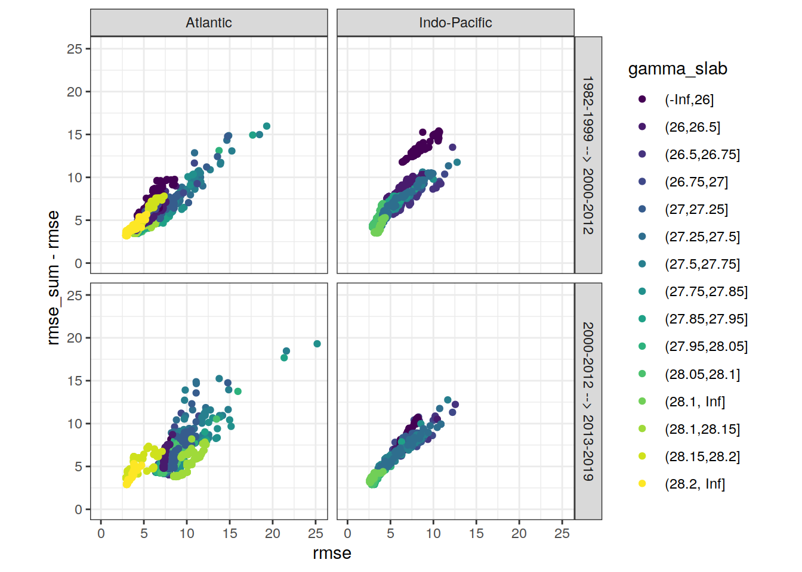

eMLR - model fitting
Jens Daniel Müller
23 December, 2020
Last updated: 2020-12-23
Checks: 7 0
Knit directory: emlr_obs_v_101/
This reproducible R Markdown analysis was created with workflowr (version 1.6.2). The Checks tab describes the reproducibility checks that were applied when the results were created. The Past versions tab lists the development history.
Great! Since the R Markdown file has been committed to the Git repository, you know the exact version of the code that produced these results.
Great job! The global environment was empty. Objects defined in the global environment can affect the analysis in your R Markdown file in unknown ways. For reproduciblity it’s best to always run the code in an empty environment.
The command set.seed(20200707) was run prior to running the code in the R Markdown file. Setting a seed ensures that any results that rely on randomness, e.g. subsampling or permutations, are reproducible.
Great job! Recording the operating system, R version, and package versions is critical for reproducibility.
Nice! There were no cached chunks for this analysis, so you can be confident that you successfully produced the results during this run.
Great job! Using relative paths to the files within your workflowr project makes it easier to run your code on other machines.
Great! You are using Git for version control. Tracking code development and connecting the code version to the results is critical for reproducibility.
The results in this page were generated with repository version c003506. See the Past versions tab to see a history of the changes made to the R Markdown and HTML files.
Note that you need to be careful to ensure that all relevant files for the analysis have been committed to Git prior to generating the results (you can use wflow_publish or wflow_git_commit). workflowr only checks the R Markdown file, but you know if there are other scripts or data files that it depends on. Below is the status of the Git repository when the results were generated:
Ignored files:
Ignored: .Rproj.user/
Unstaged changes:
Modified: analysis/_site.yml
Modified: data/auxillary/params_local.rds
Note that any generated files, e.g. HTML, png, CSS, etc., are not included in this status report because it is ok for generated content to have uncommitted changes.
These are the previous versions of the repository in which changes were made to the R Markdown (analysis/eMLR_model_fitting.Rmd) and HTML (docs/eMLR_model_fitting.html) files. If you’ve configured a remote Git repository (see ?wflow_git_remote), click on the hyperlinks in the table below to view the files as they were in that past version.
| File | Version | Author | Date | Message |
|---|---|---|---|---|
| Rmd | 5a2f88c | Jens Müller | 2020-12-23 | Initial commit |
1 Required data
Required are:
- cleaned and prepared GLODAPv2_2020 file
GLODAP <-
read_csv(paste(path_version_data,
"GLODAPv2.2020_MLR_fitting_ready.csv",
sep = ""))2 Predictor combinations
Find all possible combinations of following considered predictor variables:
- sal, temp, aou, oxygen, silicate, phosphate, phosphate_star
# the following code is a workaround to find all predictor combinations
# using the olsrr package and fit all models for one era, slab, and basin
i_basin <- unique(GLODAP$basin)[1]
i_era <- unique(GLODAP$era)[1]
# subset one basin and era for fitting
GLODAP_basin_era <- GLODAP %>%
filter(basin == i_basin, era == i_era)
i_gamma_slab <- unique(GLODAP_basin_era$gamma_slab)[1]
print(i_gamma_slab)
# subset one gamma slab
GLODAP_basin_era_slab <- GLODAP_basin_era %>%
filter(gamma_slab == i_gamma_slab)
# fit the full linear model, i.e. all predictor combinations
lm_full <- lm(paste(
params_local$MLR_target,
paste(params_local$MLR_predictors, collapse = " + "),
sep = " ~ "
),
data = GLODAP_basin_era_slab)
# fit linear models for all possible predictor combinations
# unfortunately, this functions does not provide model coefficients (yet)
lm_all <- ols_step_all_possible(lm_full)
# extract diagnostics of each linear model
lm_all <- as_tibble(lm_all$result)
# format model formula
lm_all <- lm_all %>%
select(n, predictors) %>%
mutate(lm_coeff = str_replace_all(predictors, " ", " + "),
lm_coeff = paste(params_local$MLR_target, "~", lm_coeff))
# remove helper objects
rm(i_gamma_slab,
i_era,
i_basin,
GLODAP_basin_era,
GLODAP_basin_era_slab,
lm_full)3 Apply predictor threshold
Select combinations with a total number of predictors in the range:
- Minimum: 2
- Maximum: 5
lm_all <- lm_all %>%
filter(n >= params_local$MLR_predictors_min,
n <= params_local$MLR_predictors_max)This results in a total number of MLR models of:
- 112
4 Fit all models
Individual linear regression models were fitted for the chosen target variable:
- cstar_tref
as a function of each predictor combination. Fitting was performed separately within each basin, era, and slab. Model diagnostics, such as the root mean squared error (RMSE), were calculated for each fitted model.
# loop across all basins, era, gamma slabs, and MLRs
# fit all MLR models
for (i_basin in unique(GLODAP$basin)) {
for (i_era in unique(GLODAP$era)) {
# i_basin <- unique(GLODAP$basin)[1]
# i_era <- unique(GLODAP$era)[1]
print(i_basin)
print(i_era)
GLODAP_basin_era <- GLODAP %>%
filter(basin == i_basin, era == i_era)
for (i_gamma_slab in unique(GLODAP_basin_era$gamma_slab)) {
# i_gamma_slab <- unique(GLODAP_basin_era$gamma_slab)[1]
print(i_gamma_slab)
GLODAP_basin_era_slab <- GLODAP_basin_era %>%
filter(gamma_slab == i_gamma_slab)
for (i_predictors in unique(lm_all$predictors)) {
# i_predictors <- unique(lm_all$predictors)[110]
# extract one model definition
i_lm <- lm_all %>%
filter(predictors == i_predictors) %>%
select(lm_coeff) %>%
pull()
# extract number of predictors
i_n_predictors <- lm_all %>%
filter(predictors == i_predictors) %>%
select(n) %>%
pull()
# fit model
i_lm_fit <- lm(as.formula(i_lm),
data = GLODAP_basin_era_slab)
# find max predictor correlation
i_cor_max <- GLODAP_basin_era_slab %>%
select(!!!syms(str_split(i_predictors, " ",
simplify = TRUE))) %>%
correlate(quiet = TRUE) %>%
select(-term) %>%
abs() %>%
max(na.rm = TRUE)
# calculate root mean squared error
i_rmse <- sqrt(
c(crossprod(i_lm_fit$residuals)) /
length(i_lm_fit$residuals)
)
# calculate maximum residual
i_resid_max <- max(abs(i_lm_fit$residuals))
# calculate Akaike information criterion aic
i_aic <- AIC(i_lm_fit)
# collect model coefficients and diagnostics
coefficients <- tidy(i_lm_fit)
coefficients <- coefficients %>%
mutate(
basin = i_basin,
era = i_era,
gamma_slab = i_gamma_slab,
model = i_lm,
rmse = i_rmse,
aic = i_aic,
resid_max = i_resid_max,
n_predictors = i_n_predictors,
na_predictor = anyNA(coefficients$estimate),
cor_max = i_cor_max
)
if (exists("lm_all_fitted")) {
lm_all_fitted <- bind_rows(lm_all_fitted, coefficients)
}
if (!exists("lm_all_fitted")) {
lm_all_fitted <- coefficients
}
# plot model diagnostics, if activated
if (params_local$plot_all_figures == "y") {
p_model <- ggnostic(
i_lm_fit,
columnsY = c(params_local$MLR_target, ".fitted", ".resid"),
title = paste(
"| era:",
i_era,
"| basin:",
i_basin,
"| gamma slab:",
i_gamma_slab,
"| predictors:",
i_predictors
)
)
ggsave(
plot = p_model,
path = paste(path_version_figures, "eMLR_diagnostics/", sep = ""),
filename = paste(
"MLR_residuals",
i_era,
i_basin,
i_gamma_slab,
i_predictors,
"predictors.png",
sep = "_"
),
width = 14,
height = 8
)
rm(p_model)
}
}
}
}
}
rm(i_lm_fit, coefficients, i_rmse,
GLODAP_basin_era, GLODAP_basin_era_slab,
i_lm,
i_basin, i_era, i_gamma_slab, i_predictors,
lm_all,
i_aic, i_n_predictors, i_resid_max)5 Prepare coeffcients
Coefficients are prepared for the mapping of Cant and the chosen target variable.
5.1 Formatting
# select relevant columns
lm_all_fitted <- lm_all_fitted %>%
select(basin, gamma_slab, era, model, n_predictors,
term, estimate,
rmse, aic, resid_max, na_predictor, cor_max)
# set coefficient to zero if not fitted (=NA)
lm_all_fitted <- lm_all_fitted %>%
mutate(estimate = if_else(is.na(estimate), 0, estimate))
# Prepare model coefficients for mapping of target variable
lm_all_fitted_wide <- lm_all_fitted %>%
pivot_wider(values_from = estimate,
names_from = term,
names_prefix = "coeff_",
values_fill = 0)5.2 Predictor selection
Within each basin and slab, the following number of best linear regression models was selected:
- 10
The criterion used to select the best models was:
- rmse
The criterion was summed up for two adjecent eras, and the models with lowest summed values were selected.
Please note, that currently the lm() function produces NAs for some predictors. It is not yet entirely clear when this happens, but presumably it is caused by some form of collinearity between predictors, such that including another predictor does not help to explain the target variable any better. The issues also expresses as exactly identical rmse values of different models. As an interim solution, models with fitted NA predictors were not included.
# remove models with predictors fitted as NA
lm_all_fitted_wide <- lm_all_fitted_wide %>%
filter(na_predictor == FALSE)# calculate RMSE sum for adjacent eras
lm_all_fitted_wide_eras <- lm_all_fitted_wide %>%
select(basin, gamma_slab, model, era, rmse, aic, resid_max) %>%
arrange(era) %>%
group_by(basin, gamma_slab, model) %>%
mutate(eras = paste(lag(era), era, sep = " --> "),
rmse_sum = rmse + lag(rmse),
aic_sum = aic + lag(aic)
) %>%
ungroup() %>%
select(-c(era)) %>%
drop_na()
# subset models with lowest summed criterion
# chose which criterion is applied
if (params_local$MLR_criterion == "aic") {
lm_best <- lm_all_fitted_wide_eras %>%
group_by(basin, gamma_slab, eras) %>%
slice_min(order_by = aic_sum,
with_ties = FALSE,
n = params_local$MLR_number) %>%
ungroup() %>%
arrange(basin, gamma_slab, eras, model)
} else {
lm_best <- lm_all_fitted_wide_eras %>%
group_by(basin, gamma_slab, eras) %>%
slice_min(order_by = rmse_sum,
with_ties = FALSE,
n = params_local$MLR_number) %>%
ungroup() %>%
arrange(basin, gamma_slab, eras, model)
}
# print table
lm_best %>%
kable() %>%
add_header_above() %>%
kable_styling() %>%
scroll_box(width = "100%", height = "400px")| basin | gamma_slab | model | rmse | aic | resid_max | eras | rmse_sum | aic_sum |
|---|---|---|---|---|---|---|---|---|
| Atlantic | (-Inf,26] | cstar_tref ~ sal + aou + oxygen + silicate + phosphate | 4.296341 | 382.2179 | 9.495767 | 1982-1999 –> 2000-2012 | 9.905635 | 811.1419 |
| Atlantic | (-Inf,26] | cstar_tref ~ sal + aou + oxygen + silicate + phosphate_star | 4.296341 | 382.2179 | 9.495767 | 1982-1999 –> 2000-2012 | 9.905635 | 811.1419 |
| Atlantic | (-Inf,26] | cstar_tref ~ sal + aou + silicate + phosphate + phosphate_star | 4.296341 | 382.2179 | 9.495767 | 1982-1999 –> 2000-2012 | 9.905635 | 811.1419 |
| Atlantic | (-Inf,26] | cstar_tref ~ sal + temp + aou + oxygen + phosphate | 4.234528 | 380.3629 | 11.624385 | 1982-1999 –> 2000-2012 | 9.774708 | 807.6504 |
| Atlantic | (-Inf,26] | cstar_tref ~ sal + temp + aou + oxygen + phosphate_star | 4.234528 | 380.3629 | 11.624385 | 1982-1999 –> 2000-2012 | 9.774708 | 807.6504 |
| Atlantic | (-Inf,26] | cstar_tref ~ sal + temp + aou + phosphate + phosphate_star | 4.234528 | 380.3629 | 11.624385 | 1982-1999 –> 2000-2012 | 9.774708 | 807.6504 |
| Atlantic | (-Inf,26] | cstar_tref ~ sal + temp + aou + silicate + phosphate | 4.421500 | 385.8934 | 9.785365 | 1982-1999 –> 2000-2012 | 9.989097 | 813.8325 |
| Atlantic | (-Inf,26] | cstar_tref ~ sal + temp + aou + silicate + phosphate_star | 4.436362 | 386.3230 | 9.795307 | 1982-1999 –> 2000-2012 | 9.994141 | 814.0291 |
| Atlantic | (-Inf,26] | cstar_tref ~ sal + temp + oxygen + silicate + phosphate | 4.451504 | 386.7591 | 9.827008 | 1982-1999 –> 2000-2012 | 9.994881 | 814.1227 |
| Atlantic | (-Inf,26] | cstar_tref ~ sal + temp + oxygen + silicate + phosphate_star | 4.451504 | 386.7591 | 9.827008 | 1982-1999 –> 2000-2012 | 9.994881 | 814.1227 |
| Atlantic | (-Inf,26] | cstar_tref ~ sal + aou + oxygen + silicate + phosphate | 6.995251 | 552.2672 | 24.870545 | 2000-2012 –> 2013-2019 | 11.291591 | 934.4851 |
| Atlantic | (-Inf,26] | cstar_tref ~ sal + aou + oxygen + silicate + phosphate_star | 6.995251 | 552.2672 | 24.870545 | 2000-2012 –> 2013-2019 | 11.291591 | 934.4851 |
| Atlantic | (-Inf,26] | cstar_tref ~ sal + aou + silicate + phosphate + phosphate_star | 6.995251 | 552.2672 | 24.870545 | 2000-2012 –> 2013-2019 | 11.291591 | 934.4851 |
| Atlantic | (-Inf,26] | cstar_tref ~ sal + temp + aou + oxygen + phosphate | 7.173181 | 556.2860 | 24.860873 | 2000-2012 –> 2013-2019 | 11.407709 | 936.6490 |
| Atlantic | (-Inf,26] | cstar_tref ~ sal + temp + aou + oxygen + phosphate_star | 7.173181 | 556.2860 | 24.860873 | 2000-2012 –> 2013-2019 | 11.407709 | 936.6490 |
| Atlantic | (-Inf,26] | cstar_tref ~ sal + temp + aou + phosphate + phosphate_star | 7.173181 | 556.2860 | 24.860873 | 2000-2012 –> 2013-2019 | 11.407709 | 936.6490 |
| Atlantic | (-Inf,26] | cstar_tref ~ sal + temp + aou + silicate + phosphate | 7.009181 | 552.5855 | 24.949933 | 2000-2012 –> 2013-2019 | 11.430681 | 938.4789 |
| Atlantic | (-Inf,26] | cstar_tref ~ sal + temp + aou + silicate + phosphate_star | 7.012297 | 552.6566 | 24.956828 | 2000-2012 –> 2013-2019 | 11.448659 | 938.9796 |
| Atlantic | (-Inf,26] | cstar_tref ~ sal + temp + oxygen + silicate + phosphate | 7.013023 | 552.6732 | 24.984294 | 2000-2012 –> 2013-2019 | 11.464526 | 939.4323 |
| Atlantic | (-Inf,26] | cstar_tref ~ sal + temp + oxygen + silicate + phosphate_star | 7.013023 | 552.6732 | 24.984294 | 2000-2012 –> 2013-2019 | 11.464526 | 939.4323 |
| Atlantic | (26,26.5] | cstar_tref ~ sal + aou + silicate + phosphate + phosphate_star | 4.928604 | 3896.0246 | 20.508733 | 1982-1999 –> 2000-2012 | 9.515861 | 6457.9879 |
| Atlantic | (26,26.5] | cstar_tref ~ sal + temp + aou + oxygen + phosphate | 4.824917 | 3868.6389 | 21.114876 | 1982-1999 –> 2000-2012 | 9.283214 | 6405.9078 |
| Atlantic | (26,26.5] | cstar_tref ~ sal + temp + aou + oxygen + phosphate_star | 4.824917 | 3868.6389 | 21.114876 | 1982-1999 –> 2000-2012 | 9.283214 | 6405.9078 |
| Atlantic | (26,26.5] | cstar_tref ~ sal + temp + aou + phosphate + phosphate_star | 4.824917 | 3868.6389 | 21.114876 | 1982-1999 –> 2000-2012 | 9.283214 | 6405.9078 |
| Atlantic | (26,26.5] | cstar_tref ~ temp + aou + oxygen + phosphate | 4.828748 | 3867.6613 | 21.042321 | 1982-1999 –> 2000-2012 | 9.289194 | 6403.3474 |
| Atlantic | (26,26.5] | cstar_tref ~ temp + aou + oxygen + phosphate_star | 4.828748 | 3867.6613 | 21.042321 | 1982-1999 –> 2000-2012 | 9.289194 | 6403.3474 |
| Atlantic | (26,26.5] | cstar_tref ~ temp + aou + oxygen + silicate + phosphate | 4.807974 | 3864.1080 | 20.667550 | 1982-1999 –> 2000-2012 | 9.242038 | 6396.6569 |
| Atlantic | (26,26.5] | cstar_tref ~ temp + aou + oxygen + silicate + phosphate_star | 4.807974 | 3864.1080 | 20.667550 | 1982-1999 –> 2000-2012 | 9.242038 | 6396.6569 |
| Atlantic | (26,26.5] | cstar_tref ~ temp + aou + phosphate + phosphate_star | 4.828748 | 3867.6613 | 21.042321 | 1982-1999 –> 2000-2012 | 9.289194 | 6403.3474 |
| Atlantic | (26,26.5] | cstar_tref ~ temp + aou + silicate + phosphate + phosphate_star | 4.807974 | 3864.1080 | 20.667550 | 1982-1999 –> 2000-2012 | 9.242038 | 6396.6569 |
| Atlantic | (26,26.5] | cstar_tref ~ sal + aou + oxygen + silicate + phosphate_star | 7.261749 | 1374.6237 | 31.586704 | 2000-2012 –> 2013-2019 | 12.190352 | 5270.6483 |
| Atlantic | (26,26.5] | cstar_tref ~ sal + temp + aou + oxygen + phosphate | 7.261617 | 1374.6164 | 31.560296 | 2000-2012 –> 2013-2019 | 12.086534 | 5243.2553 |
| Atlantic | (26,26.5] | cstar_tref ~ sal + temp + aou + oxygen + phosphate_star | 7.261617 | 1374.6164 | 31.560296 | 2000-2012 –> 2013-2019 | 12.086534 | 5243.2553 |
| Atlantic | (26,26.5] | cstar_tref ~ sal + temp + aou + phosphate + phosphate_star | 7.261617 | 1374.6164 | 31.560296 | 2000-2012 –> 2013-2019 | 12.086534 | 5243.2553 |
| Atlantic | (26,26.5] | cstar_tref ~ temp + aou + oxygen + phosphate | 7.353763 | 1377.6603 | 31.571710 | 2000-2012 –> 2013-2019 | 12.182511 | 5245.3215 |
| Atlantic | (26,26.5] | cstar_tref ~ temp + aou + oxygen + phosphate_star | 7.353763 | 1377.6603 | 31.571710 | 2000-2012 –> 2013-2019 | 12.182511 | 5245.3215 |
| Atlantic | (26,26.5] | cstar_tref ~ temp + aou + oxygen + silicate + phosphate | 7.346070 | 1379.2416 | 31.293863 | 2000-2012 –> 2013-2019 | 12.154044 | 5243.3496 |
| Atlantic | (26,26.5] | cstar_tref ~ temp + aou + oxygen + silicate + phosphate_star | 7.346070 | 1379.2416 | 31.293863 | 2000-2012 –> 2013-2019 | 12.154044 | 5243.3496 |
| Atlantic | (26,26.5] | cstar_tref ~ temp + aou + phosphate + phosphate_star | 7.353763 | 1377.6603 | 31.571710 | 2000-2012 –> 2013-2019 | 12.182511 | 5245.3215 |
| Atlantic | (26,26.5] | cstar_tref ~ temp + aou + silicate + phosphate + phosphate_star | 7.346070 | 1379.2416 | 31.293863 | 2000-2012 –> 2013-2019 | 12.154044 | 5243.3496 |
| Atlantic | (26.5,26.75] | cstar_tref ~ sal + temp + aou + oxygen + phosphate | 4.079079 | 5279.4453 | 18.481453 | 1982-1999 –> 2000-2012 | 7.878856 | 8917.5526 |
| Atlantic | (26.5,26.75] | cstar_tref ~ sal + temp + aou + oxygen + phosphate_star | 4.079079 | 5279.4453 | 18.481453 | 1982-1999 –> 2000-2012 | 7.878856 | 8917.5526 |
| Atlantic | (26.5,26.75] | cstar_tref ~ sal + temp + aou + phosphate + phosphate_star | 4.079079 | 5279.4453 | 18.481453 | 1982-1999 –> 2000-2012 | 7.878856 | 8917.5526 |
| Atlantic | (26.5,26.75] | cstar_tref ~ sal + temp + aou + silicate + phosphate_star | 4.033997 | 5258.7299 | 17.586434 | 1982-1999 –> 2000-2012 | 7.946330 | 8935.2531 |
| Atlantic | (26.5,26.75] | cstar_tref ~ sal + temp + oxygen + silicate + phosphate | 4.029764 | 5256.7726 | 17.662569 | 1982-1999 –> 2000-2012 | 7.933401 | 8930.3677 |
| Atlantic | (26.5,26.75] | cstar_tref ~ sal + temp + oxygen + silicate + phosphate_star | 4.029764 | 5256.7726 | 17.662569 | 1982-1999 –> 2000-2012 | 7.933401 | 8930.3677 |
| Atlantic | (26.5,26.75] | cstar_tref ~ sal + temp + silicate + phosphate + phosphate_star | 4.029764 | 5256.7726 | 17.662569 | 1982-1999 –> 2000-2012 | 7.933401 | 8930.3677 |
| Atlantic | (26.5,26.75] | cstar_tref ~ temp + aou + oxygen + silicate + phosphate | 4.057959 | 5269.7692 | 19.329735 | 1982-1999 –> 2000-2012 | 7.901221 | 8922.8515 |
| Atlantic | (26.5,26.75] | cstar_tref ~ temp + aou + oxygen + silicate + phosphate_star | 4.057959 | 5269.7692 | 19.329735 | 1982-1999 –> 2000-2012 | 7.901221 | 8922.8515 |
| Atlantic | (26.5,26.75] | cstar_tref ~ temp + aou + silicate + phosphate + phosphate_star | 4.057959 | 5269.7692 | 19.329735 | 1982-1999 –> 2000-2012 | 7.901221 | 8922.8515 |
| Atlantic | (26.5,26.75] | cstar_tref ~ sal + temp + aou + oxygen + phosphate | 7.884400 | 1414.4975 | 34.447353 | 2000-2012 –> 2013-2019 | 11.963479 | 6693.9428 |
| Atlantic | (26.5,26.75] | cstar_tref ~ sal + temp + aou + oxygen + phosphate_star | 7.884400 | 1414.4975 | 34.447353 | 2000-2012 –> 2013-2019 | 11.963479 | 6693.9428 |
| Atlantic | (26.5,26.75] | cstar_tref ~ sal + temp + aou + phosphate + phosphate_star | 7.884400 | 1414.4975 | 34.447353 | 2000-2012 –> 2013-2019 | 11.963479 | 6693.9428 |
| Atlantic | (26.5,26.75] | cstar_tref ~ sal + temp + aou + silicate + phosphate_star | 7.916183 | 1416.1148 | 33.692478 | 2000-2012 –> 2013-2019 | 11.950180 | 6674.8447 |
| Atlantic | (26.5,26.75] | cstar_tref ~ sal + temp + oxygen + silicate + phosphate | 7.915635 | 1416.0869 | 33.699098 | 2000-2012 –> 2013-2019 | 11.945399 | 6672.8596 |
| Atlantic | (26.5,26.75] | cstar_tref ~ sal + temp + oxygen + silicate + phosphate_star | 7.915635 | 1416.0869 | 33.699098 | 2000-2012 –> 2013-2019 | 11.945399 | 6672.8596 |
| Atlantic | (26.5,26.75] | cstar_tref ~ sal + temp + silicate + phosphate + phosphate_star | 7.915635 | 1416.0869 | 33.699098 | 2000-2012 –> 2013-2019 | 11.945399 | 6672.8596 |
| Atlantic | (26.5,26.75] | cstar_tref ~ temp + aou + oxygen + silicate + phosphate | 7.898643 | 1415.2231 | 33.883282 | 2000-2012 –> 2013-2019 | 11.956602 | 6684.9923 |
| Atlantic | (26.5,26.75] | cstar_tref ~ temp + aou + oxygen + silicate + phosphate_star | 7.898643 | 1415.2231 | 33.883282 | 2000-2012 –> 2013-2019 | 11.956602 | 6684.9923 |
| Atlantic | (26.5,26.75] | cstar_tref ~ temp + aou + silicate + phosphate + phosphate_star | 7.898643 | 1415.2231 | 33.883282 | 2000-2012 –> 2013-2019 | 11.956602 | 6684.9923 |
| Atlantic | (26.75,27] | cstar_tref ~ sal + temp + aou + oxygen + phosphate | 4.356019 | 6222.7877 | 31.710668 | 1982-1999 –> 2000-2012 | 8.664939 | 10556.2265 |
| Atlantic | (26.75,27] | cstar_tref ~ sal + temp + aou + oxygen + phosphate_star | 4.356019 | 6222.7877 | 31.710668 | 1982-1999 –> 2000-2012 | 8.664939 | 10556.2265 |
| Atlantic | (26.75,27] | cstar_tref ~ sal + temp + aou + phosphate + phosphate_star | 4.356019 | 6222.7877 | 31.710668 | 1982-1999 –> 2000-2012 | 8.664939 | 10556.2265 |
| Atlantic | (26.75,27] | cstar_tref ~ sal + temp + aou + phosphate_star | 4.360163 | 6222.8301 | 31.724961 | 1982-1999 –> 2000-2012 | 8.670410 | 10554.7310 |
| Atlantic | (26.75,27] | cstar_tref ~ sal + temp + aou + silicate + phosphate | 4.326895 | 6208.3782 | 30.972036 | 1982-1999 –> 2000-2012 | 8.608065 | 10532.1255 |
| Atlantic | (26.75,27] | cstar_tref ~ sal + temp + aou + silicate + phosphate_star | 4.305575 | 6197.7684 | 30.918133 | 1982-1999 –> 2000-2012 | 8.579551 | 10518.9927 |
| Atlantic | (26.75,27] | cstar_tref ~ sal + temp + oxygen + phosphate_star | 4.360478 | 6222.9853 | 31.723146 | 1982-1999 –> 2000-2012 | 8.671336 | 10555.0987 |
| Atlantic | (26.75,27] | cstar_tref ~ sal + temp + oxygen + silicate + phosphate | 4.305185 | 6197.5737 | 30.906299 | 1982-1999 –> 2000-2012 | 8.579740 | 10519.0014 |
| Atlantic | (26.75,27] | cstar_tref ~ sal + temp + oxygen + silicate + phosphate_star | 4.305185 | 6197.5737 | 30.906299 | 1982-1999 –> 2000-2012 | 8.579740 | 10519.0014 |
| Atlantic | (26.75,27] | cstar_tref ~ sal + temp + silicate + phosphate + phosphate_star | 4.305185 | 6197.5737 | 30.906299 | 1982-1999 –> 2000-2012 | 8.579740 | 10519.0014 |
| Atlantic | (26.75,27] | cstar_tref ~ sal + temp + aou + oxygen + phosphate | 6.418451 | 2138.2187 | 38.981453 | 2000-2012 –> 2013-2019 | 10.774470 | 8361.0065 |
| Atlantic | (26.75,27] | cstar_tref ~ sal + temp + aou + oxygen + phosphate_star | 6.418451 | 2138.2187 | 38.981453 | 2000-2012 –> 2013-2019 | 10.774470 | 8361.0065 |
| Atlantic | (26.75,27] | cstar_tref ~ sal + temp + aou + phosphate + phosphate_star | 6.418451 | 2138.2187 | 38.981453 | 2000-2012 –> 2013-2019 | 10.774470 | 8361.0065 |
| Atlantic | (26.75,27] | cstar_tref ~ sal + temp + aou + silicate + phosphate_star | 6.482861 | 2144.6891 | 38.386084 | 2000-2012 –> 2013-2019 | 10.788436 | 8342.4574 |
| Atlantic | (26.75,27] | cstar_tref ~ sal + temp + oxygen + silicate + phosphate | 6.481335 | 2144.5365 | 38.408720 | 2000-2012 –> 2013-2019 | 10.786520 | 8342.1102 |
| Atlantic | (26.75,27] | cstar_tref ~ sal + temp + oxygen + silicate + phosphate_star | 6.481335 | 2144.5365 | 38.408720 | 2000-2012 –> 2013-2019 | 10.786520 | 8342.1102 |
| Atlantic | (26.75,27] | cstar_tref ~ sal + temp + silicate + phosphate + phosphate_star | 6.481335 | 2144.5365 | 38.408720 | 2000-2012 –> 2013-2019 | 10.786520 | 8342.1102 |
| Atlantic | (26.75,27] | cstar_tref ~ temp + aou + oxygen + silicate + phosphate | 6.390622 | 2135.4031 | 39.283560 | 2000-2012 –> 2013-2019 | 10.737533 | 8353.6947 |
| Atlantic | (26.75,27] | cstar_tref ~ temp + aou + oxygen + silicate + phosphate_star | 6.390622 | 2135.4031 | 39.283560 | 2000-2012 –> 2013-2019 | 10.737533 | 8353.6947 |
| Atlantic | (26.75,27] | cstar_tref ~ temp + aou + silicate + phosphate + phosphate_star | 6.390622 | 2135.4031 | 39.283560 | 2000-2012 –> 2013-2019 | 10.737533 | 8353.6947 |
| Atlantic | (27,27.25] | cstar_tref ~ sal + temp + aou + silicate + phosphate_star | 4.741934 | 9112.7229 | 30.795696 | 1982-1999 –> 2000-2012 | 9.478022 | 16300.3727 |
| Atlantic | (27,27.25] | cstar_tref ~ sal + temp + oxygen + silicate + phosphate | 4.745279 | 9114.8793 | 30.818531 | 1982-1999 –> 2000-2012 | 9.479846 | 16301.7547 |
| Atlantic | (27,27.25] | cstar_tref ~ sal + temp + oxygen + silicate + phosphate_star | 4.745279 | 9114.8793 | 30.818531 | 1982-1999 –> 2000-2012 | 9.479846 | 16301.7547 |
| Atlantic | (27,27.25] | cstar_tref ~ sal + temp + silicate + phosphate + phosphate_star | 4.745279 | 9114.8793 | 30.818531 | 1982-1999 –> 2000-2012 | 9.479846 | 16301.7547 |
| Atlantic | (27,27.25] | cstar_tref ~ temp + aou + oxygen + silicate + phosphate | 4.743012 | 9113.4180 | 29.811955 | 1982-1999 –> 2000-2012 | 9.542364 | 16333.0738 |
| Atlantic | (27,27.25] | cstar_tref ~ temp + aou + oxygen + silicate + phosphate_star | 4.743012 | 9113.4180 | 29.811955 | 1982-1999 –> 2000-2012 | 9.542364 | 16333.0738 |
| Atlantic | (27,27.25] | cstar_tref ~ temp + aou + silicate + phosphate + phosphate_star | 4.743012 | 9113.4180 | 29.811955 | 1982-1999 –> 2000-2012 | 9.542364 | 16333.0738 |
| Atlantic | (27,27.25] | cstar_tref ~ temp + aou + silicate + phosphate_star | 4.761528 | 9123.3329 | 30.432532 | 1982-1999 –> 2000-2012 | 9.564029 | 16342.5706 |
| Atlantic | (27,27.25] | cstar_tref ~ temp + oxygen + silicate + phosphate_star | 4.764523 | 9125.2558 | 30.466585 | 1982-1999 –> 2000-2012 | 9.566720 | 16344.3410 |
| Atlantic | (27,27.25] | cstar_tref ~ temp + silicate + phosphate + phosphate_star | 4.764523 | 9125.2558 | 30.466585 | 1982-1999 –> 2000-2012 | 9.566720 | 16344.3410 |
| Atlantic | (27,27.25] | cstar_tref ~ sal + temp + aou + silicate + phosphate | 7.909650 | 3270.8786 | 45.612733 | 2000-2012 –> 2013-2019 | 12.708739 | 12420.2396 |
| Atlantic | (27,27.25] | cstar_tref ~ sal + temp + aou + silicate + phosphate_star | 7.897974 | 3269.4988 | 45.822794 | 2000-2012 –> 2013-2019 | 12.639908 | 12382.2217 |
| Atlantic | (27,27.25] | cstar_tref ~ sal + temp + oxygen + silicate + phosphate | 7.897421 | 3269.4335 | 45.836783 | 2000-2012 –> 2013-2019 | 12.642700 | 12384.3128 |
| Atlantic | (27,27.25] | cstar_tref ~ sal + temp + oxygen + silicate + phosphate_star | 7.897421 | 3269.4335 | 45.836783 | 2000-2012 –> 2013-2019 | 12.642700 | 12384.3128 |
| Atlantic | (27,27.25] | cstar_tref ~ sal + temp + silicate + phosphate + phosphate_star | 7.897421 | 3269.4335 | 45.836783 | 2000-2012 –> 2013-2019 | 12.642700 | 12384.3128 |
| Atlantic | (27,27.25] | cstar_tref ~ temp + aou + oxygen + silicate + phosphate | 7.959281 | 3276.7209 | 47.596971 | 2000-2012 –> 2013-2019 | 12.702293 | 12390.1389 |
| Atlantic | (27,27.25] | cstar_tref ~ temp + aou + oxygen + silicate + phosphate_star | 7.959281 | 3276.7209 | 47.596971 | 2000-2012 –> 2013-2019 | 12.702293 | 12390.1389 |
| Atlantic | (27,27.25] | cstar_tref ~ temp + aou + silicate + phosphate + phosphate_star | 7.959281 | 3276.7209 | 47.596971 | 2000-2012 –> 2013-2019 | 12.702293 | 12390.1389 |
| Atlantic | (27,27.25] | cstar_tref ~ temp + aou + silicate + phosphate_star | 7.979335 | 3277.0713 | 47.282883 | 2000-2012 –> 2013-2019 | 12.740863 | 12400.4042 |
| Atlantic | (27,27.25] | cstar_tref ~ temp + oxygen + silicate + phosphate_star | 7.977785 | 3276.8898 | 47.290250 | 2000-2012 –> 2013-2019 | 12.742309 | 12402.1457 |
| Atlantic | (27.25,27.5] | cstar_tref ~ sal + temp + aou + oxygen + phosphate | 4.190290 | 11477.8678 | 24.856613 | 1982-1999 –> 2000-2012 | 8.566047 | 21502.8406 |
| Atlantic | (27.25,27.5] | cstar_tref ~ sal + temp + aou + oxygen + phosphate_star | 4.190290 | 11477.8678 | 24.856613 | 1982-1999 –> 2000-2012 | 8.566047 | 21502.8406 |
| Atlantic | (27.25,27.5] | cstar_tref ~ sal + temp + aou + phosphate + phosphate_star | 4.190290 | 11477.8678 | 24.856613 | 1982-1999 –> 2000-2012 | 8.566047 | 21502.8406 |
| Atlantic | (27.25,27.5] | cstar_tref ~ sal + temp + aou + phosphate_star | 4.190718 | 11476.2789 | 24.877590 | 1982-1999 –> 2000-2012 | 8.580947 | 21510.6687 |
| Atlantic | (27.25,27.5] | cstar_tref ~ sal + temp + aou + silicate + phosphate_star | 4.190056 | 11477.6432 | 25.002797 | 1982-1999 –> 2000-2012 | 8.580275 | 21514.0259 |
| Atlantic | (27.25,27.5] | cstar_tref ~ sal + temp + oxygen + phosphate_star | 4.193589 | 11479.0316 | 24.917864 | 1982-1999 –> 2000-2012 | 8.587430 | 21516.2660 |
| Atlantic | (27.25,27.5] | cstar_tref ~ sal + temp + oxygen + silicate + phosphate | 4.193143 | 11480.6043 | 25.020899 | 1982-1999 –> 2000-2012 | 8.586972 | 21519.8292 |
| Atlantic | (27.25,27.5] | cstar_tref ~ sal + temp + oxygen + silicate + phosphate_star | 4.193143 | 11480.6043 | 25.020899 | 1982-1999 –> 2000-2012 | 8.586972 | 21519.8292 |
| Atlantic | (27.25,27.5] | cstar_tref ~ sal + temp + phosphate + phosphate_star | 4.193589 | 11479.0316 | 24.917864 | 1982-1999 –> 2000-2012 | 8.587430 | 21516.2660 |
| Atlantic | (27.25,27.5] | cstar_tref ~ sal + temp + silicate + phosphate + phosphate_star | 4.193143 | 11480.6043 | 25.020899 | 1982-1999 –> 2000-2012 | 8.586972 | 21519.8292 |
| Atlantic | (27.25,27.5] | cstar_tref ~ sal + aou + oxygen + silicate + phosphate | 7.360258 | 3347.0727 | 36.605630 | 2000-2012 –> 2013-2019 | 11.618373 | 14889.4883 |
| Atlantic | (27.25,27.5] | cstar_tref ~ sal + aou + oxygen + silicate + phosphate_star | 7.360258 | 3347.0727 | 36.605630 | 2000-2012 –> 2013-2019 | 11.618373 | 14889.4883 |
| Atlantic | (27.25,27.5] | cstar_tref ~ sal + aou + silicate + phosphate + phosphate_star | 7.360258 | 3347.0727 | 36.605630 | 2000-2012 –> 2013-2019 | 11.618373 | 14889.4883 |
| Atlantic | (27.25,27.5] | cstar_tref ~ sal + temp + aou + oxygen + phosphate | 7.274991 | 3335.7000 | 37.835128 | 2000-2012 –> 2013-2019 | 11.465281 | 14813.5679 |
| Atlantic | (27.25,27.5] | cstar_tref ~ sal + temp + aou + oxygen + phosphate_star | 7.274991 | 3335.7000 | 37.835128 | 2000-2012 –> 2013-2019 | 11.465281 | 14813.5679 |
| Atlantic | (27.25,27.5] | cstar_tref ~ sal + temp + aou + phosphate + phosphate_star | 7.274991 | 3335.7000 | 37.835128 | 2000-2012 –> 2013-2019 | 11.465281 | 14813.5679 |
| Atlantic | (27.25,27.5] | cstar_tref ~ sal + temp + aou + silicate + phosphate | 7.396740 | 3351.8984 | 36.767618 | 2000-2012 –> 2013-2019 | 11.606388 | 14848.2950 |
| Atlantic | (27.25,27.5] | cstar_tref ~ temp + aou + oxygen + silicate + phosphate | 7.310442 | 3340.4444 | 36.952554 | 2000-2012 –> 2013-2019 | 11.565312 | 14879.7960 |
| Atlantic | (27.25,27.5] | cstar_tref ~ temp + aou + oxygen + silicate + phosphate_star | 7.310442 | 3340.4444 | 36.952554 | 2000-2012 –> 2013-2019 | 11.565312 | 14879.7960 |
| Atlantic | (27.25,27.5] | cstar_tref ~ temp + aou + silicate + phosphate + phosphate_star | 7.310442 | 3340.4444 | 36.952554 | 2000-2012 –> 2013-2019 | 11.565312 | 14879.7960 |
| Atlantic | (27.5,27.75] | cstar_tref ~ sal + aou + oxygen + silicate + phosphate | 4.212186 | 12927.2798 | 29.288701 | 1982-1999 –> 2000-2012 | 8.241892 | 21446.6790 |
| Atlantic | (27.5,27.75] | cstar_tref ~ sal + aou + oxygen + silicate + phosphate_star | 4.212186 | 12927.2798 | 29.288701 | 1982-1999 –> 2000-2012 | 8.241892 | 21446.6790 |
| Atlantic | (27.5,27.75] | cstar_tref ~ sal + aou + silicate + phosphate + phosphate_star | 4.212186 | 12927.2798 | 29.288701 | 1982-1999 –> 2000-2012 | 8.241892 | 21446.6790 |
| Atlantic | (27.5,27.75] | cstar_tref ~ sal + temp + aou + silicate + phosphate | 4.209988 | 12924.9204 | 29.214425 | 1982-1999 –> 2000-2012 | 8.229376 | 21436.5667 |
| Atlantic | (27.5,27.75] | cstar_tref ~ sal + temp + aou + silicate + phosphate_star | 4.231066 | 12947.4939 | 29.123261 | 1982-1999 –> 2000-2012 | 8.238135 | 21449.8579 |
| Atlantic | (27.5,27.75] | cstar_tref ~ sal + temp + oxygen + silicate + phosphate | 4.215226 | 12930.5410 | 29.177023 | 1982-1999 –> 2000-2012 | 8.225012 | 21434.9540 |
| Atlantic | (27.5,27.75] | cstar_tref ~ sal + temp + oxygen + silicate + phosphate_star | 4.215226 | 12930.5410 | 29.177023 | 1982-1999 –> 2000-2012 | 8.225012 | 21434.9540 |
| Atlantic | (27.5,27.75] | cstar_tref ~ sal + temp + silicate + phosphate + phosphate_star | 4.215226 | 12930.5410 | 29.177023 | 1982-1999 –> 2000-2012 | 8.225012 | 21434.9540 |
| Atlantic | (27.5,27.75] | cstar_tref ~ temp + aou + oxygen + silicate + phosphate | 4.222923 | 12938.7863 | 30.530632 | 1982-1999 –> 2000-2012 | 8.246342 | 21453.4642 |
| Atlantic | (27.5,27.75] | cstar_tref ~ temp + aou + oxygen + silicate + phosphate_star | 4.222923 | 12938.7863 | 30.530632 | 1982-1999 –> 2000-2012 | 8.246342 | 21453.4642 |
| Atlantic | (27.5,27.75] | cstar_tref ~ sal + aou + oxygen + silicate + phosphate | 7.334329 | 3657.4867 | 41.073197 | 2000-2012 –> 2013-2019 | 11.546515 | 16584.7666 |
| Atlantic | (27.5,27.75] | cstar_tref ~ sal + aou + oxygen + silicate + phosphate_star | 7.334329 | 3657.4867 | 41.073197 | 2000-2012 –> 2013-2019 | 11.546515 | 16584.7666 |
| Atlantic | (27.5,27.75] | cstar_tref ~ sal + aou + silicate + phosphate + phosphate_star | 7.334329 | 3657.4867 | 41.073197 | 2000-2012 –> 2013-2019 | 11.546515 | 16584.7666 |
| Atlantic | (27.5,27.75] | cstar_tref ~ sal + temp + aou + silicate + phosphate | 7.327077 | 3656.4303 | 41.006696 | 2000-2012 –> 2013-2019 | 11.537065 | 16581.3506 |
| Atlantic | (27.5,27.75] | cstar_tref ~ sal + temp + aou + silicate + phosphate_star | 7.312542 | 3654.3095 | 41.005647 | 2000-2012 –> 2013-2019 | 11.543608 | 16601.8034 |
| Atlantic | (27.5,27.75] | cstar_tref ~ sal + temp + oxygen + silicate + phosphate | 7.322696 | 3655.7915 | 41.015992 | 2000-2012 –> 2013-2019 | 11.537922 | 16586.3324 |
| Atlantic | (27.5,27.75] | cstar_tref ~ sal + temp + oxygen + silicate + phosphate_star | 7.322696 | 3655.7915 | 41.015992 | 2000-2012 –> 2013-2019 | 11.537922 | 16586.3324 |
| Atlantic | (27.5,27.75] | cstar_tref ~ sal + temp + silicate + phosphate + phosphate_star | 7.322696 | 3655.7915 | 41.015992 | 2000-2012 –> 2013-2019 | 11.537922 | 16586.3324 |
| Atlantic | (27.5,27.75] | cstar_tref ~ temp + aou + oxygen + silicate + phosphate | 7.332713 | 3657.2514 | 40.713294 | 2000-2012 –> 2013-2019 | 11.555635 | 16596.0377 |
| Atlantic | (27.5,27.75] | cstar_tref ~ temp + aou + oxygen + silicate + phosphate_star | 7.332713 | 3657.2514 | 40.713294 | 2000-2012 –> 2013-2019 | 11.555635 | 16596.0377 |
| Atlantic | (27.75,27.85] | cstar_tref ~ sal + aou + oxygen + silicate + phosphate | 4.381648 | 8992.7266 | 27.810268 | 1982-1999 –> 2000-2012 | 8.563970 | 13458.1221 |
| Atlantic | (27.75,27.85] | cstar_tref ~ sal + aou + oxygen + silicate + phosphate_star | 4.381648 | 8992.7266 | 27.810268 | 1982-1999 –> 2000-2012 | 8.563970 | 13458.1221 |
| Atlantic | (27.75,27.85] | cstar_tref ~ sal + aou + silicate + phosphate + phosphate_star | 4.381648 | 8992.7266 | 27.810268 | 1982-1999 –> 2000-2012 | 8.563970 | 13458.1221 |
| Atlantic | (27.75,27.85] | cstar_tref ~ sal + oxygen + silicate + phosphate | 4.381915 | 8990.9153 | 27.785998 | 1982-1999 –> 2000-2012 | 8.576301 | 13458.8101 |
| Atlantic | (27.75,27.85] | cstar_tref ~ sal + silicate + phosphate + phosphate_star | 4.381915 | 8990.9153 | 27.785998 | 1982-1999 –> 2000-2012 | 8.576301 | 13458.8101 |
| Atlantic | (27.75,27.85] | cstar_tref ~ sal + temp + aou + silicate + phosphate | 4.384606 | 8994.8186 | 27.866719 | 1982-1999 –> 2000-2012 | 8.569027 | 13460.9979 |
| Atlantic | (27.75,27.85] | cstar_tref ~ sal + temp + aou + silicate + phosphate_star | 4.379193 | 8990.9894 | 27.629410 | 1982-1999 –> 2000-2012 | 8.554546 | 13453.7800 |
| Atlantic | (27.75,27.85] | cstar_tref ~ sal + temp + oxygen + silicate + phosphate | 4.381894 | 8992.9009 | 27.796328 | 1982-1999 –> 2000-2012 | 8.560729 | 13456.9935 |
| Atlantic | (27.75,27.85] | cstar_tref ~ sal + temp + oxygen + silicate + phosphate_star | 4.381894 | 8992.9009 | 27.796328 | 1982-1999 –> 2000-2012 | 8.560729 | 13456.9935 |
| Atlantic | (27.75,27.85] | cstar_tref ~ sal + temp + silicate + phosphate + phosphate_star | 4.381894 | 8992.9009 | 27.796328 | 1982-1999 –> 2000-2012 | 8.560729 | 13456.9935 |
| Atlantic | (27.75,27.85] | cstar_tref ~ sal + aou + oxygen + silicate + phosphate | 9.034954 | 2258.4244 | 54.438456 | 2000-2012 –> 2013-2019 | 13.416601 | 11251.1509 |
| Atlantic | (27.75,27.85] | cstar_tref ~ sal + aou + oxygen + silicate + phosphate_star | 9.034954 | 2258.4244 | 54.438456 | 2000-2012 –> 2013-2019 | 13.416601 | 11251.1509 |
| Atlantic | (27.75,27.85] | cstar_tref ~ sal + aou + silicate + phosphate + phosphate_star | 9.034954 | 2258.4244 | 54.438456 | 2000-2012 –> 2013-2019 | 13.416601 | 11251.1509 |
| Atlantic | (27.75,27.85] | cstar_tref ~ sal + temp + aou + silicate + phosphate | 9.063941 | 2260.4104 | 54.519901 | 2000-2012 –> 2013-2019 | 13.448547 | 11255.2289 |
| Atlantic | (27.75,27.85] | cstar_tref ~ sal + temp + aou + silicate + phosphate_star | 9.040641 | 2258.8146 | 54.444814 | 2000-2012 –> 2013-2019 | 13.419835 | 11249.8039 |
| Atlantic | (27.75,27.85] | cstar_tref ~ sal + temp + oxygen + silicate + phosphate | 9.068762 | 2260.7401 | 54.499134 | 2000-2012 –> 2013-2019 | 13.450656 | 11253.6410 |
| Atlantic | (27.75,27.85] | cstar_tref ~ sal + temp + silicate + phosphate + phosphate_star | 9.068762 | 2260.7401 | 54.499134 | 2000-2012 –> 2013-2019 | 13.450656 | 11253.6410 |
| Atlantic | (27.75,27.85] | cstar_tref ~ temp + aou + oxygen + silicate + phosphate | 8.956103 | 2252.9897 | 53.139738 | 2000-2012 –> 2013-2019 | 13.364900 | 11264.8648 |
| Atlantic | (27.75,27.85] | cstar_tref ~ temp + aou + oxygen + silicate + phosphate_star | 8.956103 | 2252.9897 | 53.139738 | 2000-2012 –> 2013-2019 | 13.364900 | 11264.8648 |
| Atlantic | (27.75,27.85] | cstar_tref ~ temp + aou + silicate + phosphate + phosphate_star | 8.956103 | 2252.9897 | 53.139738 | 2000-2012 –> 2013-2019 | 13.364900 | 11264.8648 |
| Atlantic | (27.85,27.95] | cstar_tref ~ sal + aou + oxygen + silicate + phosphate | 4.324833 | 18478.7309 | 25.277694 | 1982-1999 –> 2000-2012 | 8.028384 | 27916.0394 |
| Atlantic | (27.85,27.95] | cstar_tref ~ sal + aou + oxygen + silicate + phosphate_star | 4.324833 | 18478.7309 | 25.277694 | 1982-1999 –> 2000-2012 | 8.028384 | 27916.0394 |
| Atlantic | (27.85,27.95] | cstar_tref ~ sal + aou + silicate + phosphate + phosphate_star | 4.324833 | 18478.7309 | 25.277694 | 1982-1999 –> 2000-2012 | 8.028384 | 27916.0394 |
| Atlantic | (27.85,27.95] | cstar_tref ~ sal + aou + silicate + phosphate_star | 4.354143 | 18519.9851 | 25.581767 | 1982-1999 –> 2000-2012 | 8.058180 | 27955.7465 |
| Atlantic | (27.85,27.95] | cstar_tref ~ sal + oxygen + silicate + phosphate | 4.521879 | 18762.0546 | 27.716527 | 1982-1999 –> 2000-2012 | 8.264642 | 28233.7412 |
| Atlantic | (27.85,27.95] | cstar_tref ~ sal + temp + aou + silicate + phosphate | 4.324744 | 18478.5979 | 25.520373 | 1982-1999 –> 2000-2012 | 8.043870 | 27930.4020 |
| Atlantic | (27.85,27.95] | cstar_tref ~ sal + temp + aou + silicate + phosphate_star | 4.323423 | 18476.6427 | 25.346683 | 1982-1999 –> 2000-2012 | 8.027439 | 27914.3850 |
| Atlantic | (27.85,27.95] | cstar_tref ~ sal + temp + oxygen + silicate + phosphate | 4.323825 | 18477.2381 | 25.483529 | 1982-1999 –> 2000-2012 | 8.035606 | 27922.2136 |
| Atlantic | (27.85,27.95] | cstar_tref ~ sal + temp + oxygen + silicate + phosphate_star | 4.323825 | 18477.2381 | 25.483529 | 1982-1999 –> 2000-2012 | 8.035606 | 27922.2136 |
| Atlantic | (27.85,27.95] | cstar_tref ~ sal + temp + silicate + phosphate + phosphate_star | 4.323825 | 18477.2381 | 25.483529 | 1982-1999 –> 2000-2012 | 8.035606 | 27922.2136 |
| Atlantic | (27.85,27.95] | cstar_tref ~ sal + aou + oxygen + silicate + phosphate | 6.447024 | 5909.4726 | 41.032275 | 2000-2012 –> 2013-2019 | 10.771857 | 24388.2034 |
| Atlantic | (27.85,27.95] | cstar_tref ~ sal + aou + oxygen + silicate + phosphate_star | 6.447024 | 5909.4726 | 41.032275 | 2000-2012 –> 2013-2019 | 10.771857 | 24388.2034 |
| Atlantic | (27.85,27.95] | cstar_tref ~ sal + aou + silicate + phosphate + phosphate_star | 6.447024 | 5909.4726 | 41.032275 | 2000-2012 –> 2013-2019 | 10.771857 | 24388.2034 |
| Atlantic | (27.85,27.95] | cstar_tref ~ sal + aou + silicate + phosphate_star | 6.551881 | 5936.4484 | 40.571297 | 2000-2012 –> 2013-2019 | 10.906024 | 24456.4336 |
| Atlantic | (27.85,27.95] | cstar_tref ~ sal + temp + aou + silicate + phosphate | 6.468772 | 5915.5211 | 40.972785 | 2000-2012 –> 2013-2019 | 10.793516 | 24394.1190 |
| Atlantic | (27.85,27.95] | cstar_tref ~ sal + temp + aou + silicate + phosphate_star | 6.456254 | 5912.0421 | 41.002308 | 2000-2012 –> 2013-2019 | 10.779677 | 24388.6848 |
| Atlantic | (27.85,27.95] | cstar_tref ~ sal + temp + oxygen + silicate + phosphate | 6.467509 | 5915.1701 | 40.986051 | 2000-2012 –> 2013-2019 | 10.791334 | 24392.4082 |
| Atlantic | (27.85,27.95] | cstar_tref ~ sal + temp + oxygen + silicate + phosphate_star | 6.467509 | 5915.1701 | 40.986051 | 2000-2012 –> 2013-2019 | 10.791334 | 24392.4082 |
| Atlantic | (27.85,27.95] | cstar_tref ~ sal + temp + silicate + phosphate | 6.480248 | 5916.7045 | 40.752247 | 2000-2012 –> 2013-2019 | 10.938935 | 24588.6338 |
| Atlantic | (27.85,27.95] | cstar_tref ~ sal + temp + silicate + phosphate + phosphate_star | 6.467509 | 5915.1701 | 40.986051 | 2000-2012 –> 2013-2019 | 10.791334 | 24392.4082 |
| Atlantic | (27.95,28.05] | cstar_tref ~ sal + aou + oxygen + silicate + phosphate | 4.274010 | 21073.5147 | 35.107936 | 1982-1999 –> 2000-2012 | 7.732400 | 34210.6809 |
| Atlantic | (27.95,28.05] | cstar_tref ~ sal + aou + oxygen + silicate + phosphate_star | 4.274010 | 21073.5147 | 35.107936 | 1982-1999 –> 2000-2012 | 7.732400 | 34210.6809 |
| Atlantic | (27.95,28.05] | cstar_tref ~ sal + aou + silicate + phosphate + phosphate_star | 4.274010 | 21073.5147 | 35.107936 | 1982-1999 –> 2000-2012 | 7.732400 | 34210.6809 |
| Atlantic | (27.95,28.05] | cstar_tref ~ sal + aou + silicate + phosphate_star | 4.274422 | 21072.2221 | 35.124580 | 1982-1999 –> 2000-2012 | 7.736912 | 34213.2341 |
| Atlantic | (27.95,28.05] | cstar_tref ~ sal + oxygen + silicate + phosphate | 4.336090 | 21177.2753 | 35.542387 | 1982-1999 –> 2000-2012 | 7.871119 | 34420.5854 |
| Atlantic | (27.95,28.05] | cstar_tref ~ sal + temp + aou + silicate + phosphate | 4.307884 | 21131.4123 | 34.997049 | 1982-1999 –> 2000-2012 | 7.783162 | 34292.6132 |
| Atlantic | (27.95,28.05] | cstar_tref ~ sal + temp + aou + silicate + phosphate_star | 4.274308 | 21074.0265 | 35.135893 | 1982-1999 –> 2000-2012 | 7.733987 | 34213.0302 |
| Atlantic | (27.95,28.05] | cstar_tref ~ sal + temp + oxygen + silicate + phosphate | 4.292230 | 21104.7128 | 35.118217 | 1982-1999 –> 2000-2012 | 7.759234 | 34254.1535 |
| Atlantic | (27.95,28.05] | cstar_tref ~ sal + temp + oxygen + silicate + phosphate_star | 4.292230 | 21104.7128 | 35.118217 | 1982-1999 –> 2000-2012 | 7.759234 | 34254.1535 |
| Atlantic | (27.95,28.05] | cstar_tref ~ sal + temp + silicate + phosphate + phosphate_star | 4.292230 | 21104.7128 | 35.118217 | 1982-1999 –> 2000-2012 | 7.759234 | 34254.1535 |
| Atlantic | (27.95,28.05] | cstar_tref ~ sal + aou + oxygen + silicate + phosphate | 6.820228 | 6270.9702 | 26.444628 | 2000-2012 –> 2013-2019 | 11.094238 | 27344.4849 |
| Atlantic | (27.95,28.05] | cstar_tref ~ sal + aou + oxygen + silicate + phosphate_star | 6.820228 | 6270.9702 | 26.444628 | 2000-2012 –> 2013-2019 | 11.094238 | 27344.4849 |
| Atlantic | (27.95,28.05] | cstar_tref ~ sal + aou + silicate + phosphate + phosphate_star | 6.820228 | 6270.9702 | 26.444628 | 2000-2012 –> 2013-2019 | 11.094238 | 27344.4849 |
| Atlantic | (27.95,28.05] | cstar_tref ~ sal + aou + silicate + phosphate_star | 6.853356 | 6278.0506 | 26.420622 | 2000-2012 –> 2013-2019 | 11.127778 | 27350.2727 |
| Atlantic | (27.95,28.05] | cstar_tref ~ sal + temp + aou + oxygen + phosphate | 6.546263 | 6194.1388 | 27.507495 | 2000-2012 –> 2013-2019 | 10.959367 | 27502.5308 |
| Atlantic | (27.95,28.05] | cstar_tref ~ sal + temp + aou + oxygen + phosphate_star | 6.546263 | 6194.1388 | 27.507495 | 2000-2012 –> 2013-2019 | 10.959367 | 27502.5308 |
| Atlantic | (27.95,28.05] | cstar_tref ~ sal + temp + aou + phosphate + phosphate_star | 6.546263 | 6194.1388 | 27.507495 | 2000-2012 –> 2013-2019 | 10.959367 | 27502.5308 |
| Atlantic | (27.95,28.05] | cstar_tref ~ sal + temp + aou + silicate + phosphate_star | 6.840765 | 6276.6047 | 26.398426 | 2000-2012 –> 2013-2019 | 11.115073 | 27350.6312 |
| Atlantic | (27.95,28.05] | cstar_tref ~ sal + temp + oxygen + silicate + phosphate | 6.865198 | 6283.2861 | 26.294205 | 2000-2012 –> 2013-2019 | 11.157428 | 27387.9989 |
| Atlantic | (27.95,28.05] | cstar_tref ~ sal + temp + silicate + phosphate + phosphate_star | 6.865198 | 6283.2861 | 26.294205 | 2000-2012 –> 2013-2019 | 11.157428 | 27387.9989 |
| Atlantic | (28.05,28.1] | cstar_tref ~ sal + temp + aou + oxygen + phosphate | 4.264461 | 15898.1925 | 25.012493 | 1982-1999 –> 2000-2012 | 7.821275 | 24448.6564 |
| Atlantic | (28.05,28.1] | cstar_tref ~ sal + temp + aou + oxygen + phosphate_star | 4.264461 | 15898.1925 | 25.012493 | 1982-1999 –> 2000-2012 | 7.821275 | 24448.6564 |
| Atlantic | (28.05,28.1] | cstar_tref ~ sal + temp + aou + phosphate + phosphate_star | 4.264461 | 15898.1925 | 25.012493 | 1982-1999 –> 2000-2012 | 7.821275 | 24448.6564 |
| Atlantic | (28.05,28.1] | cstar_tref ~ sal + temp + aou + silicate + phosphate_star | 4.352758 | 16011.6459 | 22.470572 | 1982-1999 –> 2000-2012 | 7.920284 | 24571.6615 |
| Atlantic | (28.05,28.1] | cstar_tref ~ sal + temp + oxygen + silicate + phosphate | 4.397558 | 16068.3334 | 24.105355 | 1982-1999 –> 2000-2012 | 7.966598 | 24629.6967 |
| Atlantic | (28.05,28.1] | cstar_tref ~ sal + temp + oxygen + silicate + phosphate_star | 4.397558 | 16068.3334 | 24.105355 | 1982-1999 –> 2000-2012 | 7.966598 | 24629.6967 |
| Atlantic | (28.05,28.1] | cstar_tref ~ sal + temp + silicate + phosphate + phosphate_star | 4.397558 | 16068.3334 | 24.105355 | 1982-1999 –> 2000-2012 | 7.966598 | 24629.6967 |
| Atlantic | (28.05,28.1] | cstar_tref ~ temp + aou + oxygen + silicate + phosphate | 4.229632 | 15852.7923 | 19.984942 | 1982-1999 –> 2000-2012 | 7.912840 | 24514.1592 |
| Atlantic | (28.05,28.1] | cstar_tref ~ temp + aou + oxygen + silicate + phosphate_star | 4.229632 | 15852.7923 | 19.984942 | 1982-1999 –> 2000-2012 | 7.912840 | 24514.1592 |
| Atlantic | (28.05,28.1] | cstar_tref ~ temp + aou + silicate + phosphate + phosphate_star | 4.229632 | 15852.7923 | 19.984942 | 1982-1999 –> 2000-2012 | 7.912840 | 24514.1592 |
| Atlantic | (28.05,28.1] | cstar_tref ~ sal + aou + oxygen + silicate + phosphate | 7.219126 | 5243.3356 | 33.195310 | 2000-2012 –> 2013-2019 | 11.614964 | 21309.5032 |
| Atlantic | (28.05,28.1] | cstar_tref ~ sal + aou + oxygen + silicate + phosphate_star | 7.219126 | 5243.3356 | 33.195310 | 2000-2012 –> 2013-2019 | 11.614964 | 21309.5032 |
| Atlantic | (28.05,28.1] | cstar_tref ~ sal + aou + silicate + phosphate + phosphate_star | 7.219126 | 5243.3356 | 33.195310 | 2000-2012 –> 2013-2019 | 11.614964 | 21309.5032 |
| Atlantic | (28.05,28.1] | cstar_tref ~ sal + temp + aou + oxygen + phosphate | 7.019812 | 5200.2195 | 32.815764 | 2000-2012 –> 2013-2019 | 11.284274 | 21098.4120 |
| Atlantic | (28.05,28.1] | cstar_tref ~ sal + temp + aou + oxygen + phosphate_star | 7.019812 | 5200.2195 | 32.815764 | 2000-2012 –> 2013-2019 | 11.284274 | 21098.4120 |
| Atlantic | (28.05,28.1] | cstar_tref ~ sal + temp + aou + phosphate + phosphate_star | 7.019812 | 5200.2195 | 32.815764 | 2000-2012 –> 2013-2019 | 11.284274 | 21098.4120 |
| Atlantic | (28.05,28.1] | cstar_tref ~ sal + temp + aou + silicate + phosphate_star | 7.301423 | 5260.7919 | 34.246996 | 2000-2012 –> 2013-2019 | 11.654180 | 21272.4378 |
| Atlantic | (28.05,28.1] | cstar_tref ~ temp + aou + oxygen + silicate + phosphate | 7.253277 | 5250.6036 | 33.198790 | 2000-2012 –> 2013-2019 | 11.482909 | 21103.3959 |
| Atlantic | (28.05,28.1] | cstar_tref ~ temp + aou + oxygen + silicate + phosphate_star | 7.253277 | 5250.6036 | 33.198790 | 2000-2012 –> 2013-2019 | 11.482909 | 21103.3959 |
| Atlantic | (28.05,28.1] | cstar_tref ~ temp + aou + silicate + phosphate + phosphate_star | 7.253277 | 5250.6036 | 33.198790 | 2000-2012 –> 2013-2019 | 11.482909 | 21103.3959 |
| Atlantic | (28.1,28.15] | cstar_tref ~ sal + temp + aou + oxygen + phosphate | 3.823788 | 13986.0316 | 30.117660 | 1982-1999 –> 2000-2012 | 7.354526 | 20529.5964 |
| Atlantic | (28.1,28.15] | cstar_tref ~ sal + temp + aou + oxygen + phosphate_star | 3.823788 | 13986.0316 | 30.117660 | 1982-1999 –> 2000-2012 | 7.354526 | 20529.5964 |
| Atlantic | (28.1,28.15] | cstar_tref ~ sal + temp + aou + phosphate + phosphate_star | 3.823788 | 13986.0316 | 30.117660 | 1982-1999 –> 2000-2012 | 7.354526 | 20529.5964 |
| Atlantic | (28.1,28.15] | cstar_tref ~ sal + temp + aou + phosphate_star | 3.827376 | 13988.7796 | 30.535724 | 1982-1999 –> 2000-2012 | 7.361950 | 20532.9896 |
| Atlantic | (28.1,28.15] | cstar_tref ~ sal + temp + aou + silicate + phosphate_star | 3.811272 | 13969.4359 | 29.589051 | 1982-1999 –> 2000-2012 | 7.271645 | 20463.9629 |
| Atlantic | (28.1,28.15] | cstar_tref ~ sal + temp + oxygen + phosphate | 3.827326 | 13988.7129 | 30.577398 | 1982-1999 –> 2000-2012 | 7.362326 | 20533.2167 |
| Atlantic | (28.1,28.15] | cstar_tref ~ sal + temp + oxygen + silicate + phosphate | 3.813440 | 13972.3140 | 29.827531 | 1982-1999 –> 2000-2012 | 7.278348 | 20470.0317 |
| Atlantic | (28.1,28.15] | cstar_tref ~ sal + temp + oxygen + silicate + phosphate_star | 3.813440 | 13972.3140 | 29.827531 | 1982-1999 –> 2000-2012 | 7.278348 | 20470.0317 |
| Atlantic | (28.1,28.15] | cstar_tref ~ sal + temp + silicate + phosphate + phosphate_star | 3.813440 | 13972.3140 | 29.827531 | 1982-1999 –> 2000-2012 | 7.278348 | 20470.0317 |
| Atlantic | (28.1,28.15] | cstar_tref ~ sal + temp + silicate + phosphate_star | 3.823169 | 13983.2124 | 30.973817 | 1982-1999 –> 2000-2012 | 7.331167 | 20509.0372 |
| Atlantic | (28.1,28.15] | cstar_tref ~ sal + temp + aou + oxygen + phosphate | 8.498930 | 4412.7742 | 37.759987 | 2000-2012 –> 2013-2019 | 12.322718 | 18398.8058 |
| Atlantic | (28.1,28.15] | cstar_tref ~ sal + temp + aou + oxygen + phosphate_star | 8.498930 | 4412.7742 | 37.759987 | 2000-2012 –> 2013-2019 | 12.322718 | 18398.8058 |
| Atlantic | (28.1,28.15] | cstar_tref ~ sal + temp + aou + phosphate + phosphate_star | 8.498930 | 4412.7742 | 37.759987 | 2000-2012 –> 2013-2019 | 12.322718 | 18398.8058 |
| Atlantic | (28.1,28.15] | cstar_tref ~ sal + temp + oxygen + silicate + phosphate | 8.733266 | 4446.3924 | 38.831861 | 2000-2012 –> 2013-2019 | 12.546706 | 18418.7063 |
| Atlantic | (28.1,28.15] | cstar_tref ~ temp + aou + oxygen + phosphate | 8.503297 | 4411.4091 | 37.718004 | 2000-2012 –> 2013-2019 | 12.399488 | 18490.3940 |
| Atlantic | (28.1,28.15] | cstar_tref ~ temp + aou + oxygen + phosphate_star | 8.503297 | 4411.4091 | 37.718004 | 2000-2012 –> 2013-2019 | 12.399488 | 18490.3940 |
| Atlantic | (28.1,28.15] | cstar_tref ~ temp + aou + oxygen + silicate + phosphate | 8.479924 | 4410.0071 | 37.793018 | 2000-2012 –> 2013-2019 | 12.353020 | 18460.8951 |
| Atlantic | (28.1,28.15] | cstar_tref ~ temp + aou + oxygen + silicate + phosphate_star | 8.479924 | 4410.0071 | 37.793018 | 2000-2012 –> 2013-2019 | 12.353020 | 18460.8951 |
| Atlantic | (28.1,28.15] | cstar_tref ~ temp + aou + phosphate + phosphate_star | 8.503297 | 4411.4091 | 37.718004 | 2000-2012 –> 2013-2019 | 12.399488 | 18490.3940 |
| Atlantic | (28.1,28.15] | cstar_tref ~ temp + aou + silicate + phosphate + phosphate_star | 8.479924 | 4410.0071 | 37.793018 | 2000-2012 –> 2013-2019 | 12.353020 | 18460.8951 |
| Atlantic | (28.15,28.2] | cstar_tref ~ sal + aou + oxygen + phosphate | 3.629966 | 5737.0540 | 25.350951 | 1982-1999 –> 2000-2012 | 7.426850 | 7791.8686 |
| Atlantic | (28.15,28.2] | cstar_tref ~ sal + aou + oxygen + phosphate_star | 3.629966 | 5737.0540 | 25.350951 | 1982-1999 –> 2000-2012 | 7.426850 | 7791.8686 |
| Atlantic | (28.15,28.2] | cstar_tref ~ sal + aou + oxygen + silicate + phosphate | 3.626418 | 5736.9869 | 25.309458 | 1982-1999 –> 2000-2012 | 7.415504 | 7792.2758 |
| Atlantic | (28.15,28.2] | cstar_tref ~ sal + aou + oxygen + silicate + phosphate_star | 3.626418 | 5736.9869 | 25.309458 | 1982-1999 –> 2000-2012 | 7.415504 | 7792.2758 |
| Atlantic | (28.15,28.2] | cstar_tref ~ sal + aou + phosphate + phosphate_star | 3.629966 | 5737.0540 | 25.350951 | 1982-1999 –> 2000-2012 | 7.426850 | 7791.8686 |
| Atlantic | (28.15,28.2] | cstar_tref ~ sal + aou + silicate + phosphate + phosphate_star | 3.626418 | 5736.9869 | 25.309458 | 1982-1999 –> 2000-2012 | 7.415504 | 7792.2758 |
| Atlantic | (28.15,28.2] | cstar_tref ~ sal + temp + aou + oxygen + phosphate | 3.627205 | 5737.4456 | 25.437268 | 1982-1999 –> 2000-2012 | 7.423419 | 7794.1292 |
| Atlantic | (28.15,28.2] | cstar_tref ~ sal + temp + aou + oxygen + phosphate_star | 3.627205 | 5737.4456 | 25.437268 | 1982-1999 –> 2000-2012 | 7.423419 | 7794.1292 |
| Atlantic | (28.15,28.2] | cstar_tref ~ sal + temp + aou + phosphate + phosphate_star | 3.627205 | 5737.4456 | 25.437268 | 1982-1999 –> 2000-2012 | 7.423419 | 7794.1292 |
| Atlantic | (28.15,28.2] | cstar_tref ~ temp + aou + oxygen + silicate + phosphate_star | 3.633753 | 5741.2586 | 25.131468 | 1982-1999 –> 2000-2012 | 7.437344 | 7799.3825 |
| Atlantic | (28.15,28.2] | cstar_tref ~ sal + aou + oxygen + silicate + phosphate | 2.951733 | 809.4233 | 9.001097 | 2000-2012 –> 2013-2019 | 6.578151 | 6546.4102 |
| Atlantic | (28.15,28.2] | cstar_tref ~ sal + aou + oxygen + silicate + phosphate_star | 2.951733 | 809.4233 | 9.001097 | 2000-2012 –> 2013-2019 | 6.578151 | 6546.4102 |
| Atlantic | (28.15,28.2] | cstar_tref ~ sal + aou + silicate + phosphate + phosphate_star | 2.951733 | 809.4233 | 9.001097 | 2000-2012 –> 2013-2019 | 6.578151 | 6546.4102 |
| Atlantic | (28.15,28.2] | cstar_tref ~ sal + temp + aou + oxygen + phosphate | 2.937234 | 807.8574 | 9.613917 | 2000-2012 –> 2013-2019 | 6.564439 | 6545.3030 |
| Atlantic | (28.15,28.2] | cstar_tref ~ sal + temp + aou + oxygen + phosphate_star | 2.937234 | 807.8574 | 9.613917 | 2000-2012 –> 2013-2019 | 6.564439 | 6545.3030 |
| Atlantic | (28.15,28.2] | cstar_tref ~ sal + temp + aou + phosphate | 2.937758 | 805.9141 | 9.594980 | 2000-2012 –> 2013-2019 | 6.594626 | 6558.5775 |
| Atlantic | (28.15,28.2] | cstar_tref ~ sal + temp + aou + phosphate + phosphate_star | 2.937234 | 807.8574 | 9.613917 | 2000-2012 –> 2013-2019 | 6.564439 | 6545.3030 |
| Atlantic | (28.15,28.2] | cstar_tref ~ sal + temp + aou + silicate + phosphate | 2.920976 | 806.0923 | 9.498338 | 2000-2012 –> 2013-2019 | 6.559051 | 6549.8640 |
| Atlantic | (28.15,28.2] | cstar_tref ~ sal + temp + oxygen + silicate + phosphate_star | 2.926958 | 806.7429 | 9.562168 | 2000-2012 –> 2013-2019 | 6.601417 | 6571.5509 |
| Atlantic | (28.15,28.2] | cstar_tref ~ sal + temp + silicate + phosphate + phosphate_star | 2.926958 | 806.7429 | 9.562168 | 2000-2012 –> 2013-2019 | 6.601417 | 6571.5509 |
| Atlantic | (28.2, Inf] | cstar_tref ~ sal + aou + oxygen + phosphate | 2.908616 | 11296.2634 | 15.596130 | 1982-1999 –> 2000-2012 | 6.142511 | 14917.1985 |
| Atlantic | (28.2, Inf] | cstar_tref ~ sal + aou + oxygen + phosphate_star | 2.908616 | 11296.2634 | 15.596130 | 1982-1999 –> 2000-2012 | 6.142511 | 14917.1985 |
| Atlantic | (28.2, Inf] | cstar_tref ~ sal + aou + oxygen + silicate + phosphate | 2.905681 | 11293.6812 | 15.511940 | 1982-1999 –> 2000-2012 | 6.134928 | 14914.6142 |
| Atlantic | (28.2, Inf] | cstar_tref ~ sal + aou + oxygen + silicate + phosphate_star | 2.905681 | 11293.6812 | 15.511940 | 1982-1999 –> 2000-2012 | 6.134928 | 14914.6142 |
| Atlantic | (28.2, Inf] | cstar_tref ~ sal + aou + phosphate + phosphate_star | 2.908616 | 11296.2634 | 15.596130 | 1982-1999 –> 2000-2012 | 6.142511 | 14917.1985 |
| Atlantic | (28.2, Inf] | cstar_tref ~ sal + aou + silicate + phosphate + phosphate_star | 2.905681 | 11293.6812 | 15.511940 | 1982-1999 –> 2000-2012 | 6.134928 | 14914.6142 |
| Atlantic | (28.2, Inf] | cstar_tref ~ sal + temp + aou + oxygen + phosphate | 2.906119 | 11294.3648 | 15.686553 | 1982-1999 –> 2000-2012 | 6.122212 | 14909.6163 |
| Atlantic | (28.2, Inf] | cstar_tref ~ sal + temp + aou + oxygen + phosphate_star | 2.906119 | 11294.3648 | 15.686553 | 1982-1999 –> 2000-2012 | 6.122212 | 14909.6163 |
| Atlantic | (28.2, Inf] | cstar_tref ~ sal + temp + aou + phosphate + phosphate_star | 2.906119 | 11294.3648 | 15.686553 | 1982-1999 –> 2000-2012 | 6.122212 | 14909.6163 |
| Atlantic | (28.2, Inf] | cstar_tref ~ temp + aou + oxygen + silicate + phosphate_star | 3.036896 | 11494.1162 | 15.397778 | 1982-1999 –> 2000-2012 | 6.248067 | 15107.2357 |
| Atlantic | (28.2, Inf] | cstar_tref ~ sal + aou + oxygen + phosphate | 3.019709 | 1395.2063 | 11.171239 | 2000-2012 –> 2013-2019 | 5.928326 | 12691.4697 |
| Atlantic | (28.2, Inf] | cstar_tref ~ sal + aou + oxygen + phosphate_star | 3.019709 | 1395.2063 | 11.171239 | 2000-2012 –> 2013-2019 | 5.928326 | 12691.4697 |
| Atlantic | (28.2, Inf] | cstar_tref ~ sal + aou + oxygen + silicate + phosphate | 3.005001 | 1394.5306 | 10.223299 | 2000-2012 –> 2013-2019 | 5.910682 | 12688.2118 |
| Atlantic | (28.2, Inf] | cstar_tref ~ sal + aou + oxygen + silicate + phosphate_star | 3.005001 | 1394.5306 | 10.223299 | 2000-2012 –> 2013-2019 | 5.910682 | 12688.2118 |
| Atlantic | (28.2, Inf] | cstar_tref ~ sal + aou + phosphate + phosphate_star | 3.019709 | 1395.2063 | 11.171239 | 2000-2012 –> 2013-2019 | 5.928326 | 12691.4697 |
| Atlantic | (28.2, Inf] | cstar_tref ~ sal + aou + silicate + phosphate + phosphate_star | 3.005001 | 1394.5306 | 10.223299 | 2000-2012 –> 2013-2019 | 5.910682 | 12688.2118 |
| Atlantic | (28.2, Inf] | cstar_tref ~ sal + temp + aou + oxygen + phosphate | 2.980154 | 1389.9806 | 9.567164 | 2000-2012 –> 2013-2019 | 5.886273 | 12684.3455 |
| Atlantic | (28.2, Inf] | cstar_tref ~ sal + temp + aou + oxygen + phosphate_star | 2.980154 | 1389.9806 | 9.567164 | 2000-2012 –> 2013-2019 | 5.886273 | 12684.3455 |
| Atlantic | (28.2, Inf] | cstar_tref ~ sal + temp + aou + phosphate + phosphate_star | 2.980154 | 1389.9806 | 9.567164 | 2000-2012 –> 2013-2019 | 5.886273 | 12684.3455 |
| Atlantic | (28.2, Inf] | cstar_tref ~ sal + temp + oxygen + silicate + phosphate_star | 3.003913 | 1394.3321 | 9.266797 | 2000-2012 –> 2013-2019 | 5.930781 | 12720.9833 |
| Indo-Pacific | (-Inf,26] | cstar_tref ~ sal + aou + oxygen + silicate + phosphate | 6.390819 | 22524.6551 | 62.020804 | 1982-1999 –> 2000-2012 | 18.174798 | 32960.0475 |
| Indo-Pacific | (-Inf,26] | cstar_tref ~ sal + aou + oxygen + silicate + phosphate_star | 6.390819 | 22524.6551 | 62.020804 | 1982-1999 –> 2000-2012 | 18.174798 | 32960.0475 |
| Indo-Pacific | (-Inf,26] | cstar_tref ~ sal + aou + silicate + phosphate + phosphate_star | 6.390819 | 22524.6551 | 62.020804 | 1982-1999 –> 2000-2012 | 18.174798 | 32960.0475 |
| Indo-Pacific | (-Inf,26] | cstar_tref ~ sal + temp + aou + phosphate + phosphate_star | 6.798345 | 22949.7071 | 63.355751 | 1982-1999 –> 2000-2012 | 18.874075 | 33450.6924 |
| Indo-Pacific | (-Inf,26] | cstar_tref ~ sal + temp + aou + silicate + phosphate | 6.505468 | 22646.9154 | 60.203319 | 1982-1999 –> 2000-2012 | 18.350600 | 33096.1898 |
| Indo-Pacific | (-Inf,26] | cstar_tref ~ sal + temp + aou + silicate + phosphate_star | 6.543378 | 22686.8682 | 59.879469 | 1982-1999 –> 2000-2012 | 18.414595 | 33142.0423 |
| Indo-Pacific | (-Inf,26] | cstar_tref ~ sal + temp + oxygen + silicate + phosphate | 6.560403 | 22704.7355 | 59.779309 | 1982-1999 –> 2000-2012 | 18.440708 | 33161.9620 |
| Indo-Pacific | (-Inf,26] | cstar_tref ~ sal + temp + oxygen + silicate + phosphate_star | 6.560403 | 22704.7355 | 59.779309 | 1982-1999 –> 2000-2012 | 18.440708 | 33161.9620 |
| Indo-Pacific | (-Inf,26] | cstar_tref ~ sal + temp + silicate + phosphate + phosphate_star | 6.560403 | 22704.7355 | 59.779309 | 1982-1999 –> 2000-2012 | 18.440708 | 33161.9620 |
| Indo-Pacific | (-Inf,26] | cstar_tref ~ sal + temp + silicate + phosphate_star | 6.792612 | 22941.9068 | 60.829906 | 1982-1999 –> 2000-2012 | 18.846836 | 33436.1112 |
| Indo-Pacific | (-Inf,26] | cstar_tref ~ sal + aou + oxygen + silicate + phosphate | 5.430260 | 16744.5580 | 26.519635 | 2000-2012 –> 2013-2019 | 11.821079 | 39269.2132 |
| Indo-Pacific | (-Inf,26] | cstar_tref ~ sal + aou + oxygen + silicate + phosphate_star | 5.430260 | 16744.5580 | 26.519635 | 2000-2012 –> 2013-2019 | 11.821079 | 39269.2132 |
| Indo-Pacific | (-Inf,26] | cstar_tref ~ sal + aou + silicate + phosphate + phosphate_star | 5.430260 | 16744.5580 | 26.519635 | 2000-2012 –> 2013-2019 | 11.821079 | 39269.2132 |
| Indo-Pacific | (-Inf,26] | cstar_tref ~ sal + temp + aou + oxygen + phosphate | 5.825104 | 17122.0382 | 30.386962 | 2000-2012 –> 2013-2019 | 12.623448 | 40071.7453 |
| Indo-Pacific | (-Inf,26] | cstar_tref ~ sal + temp + aou + phosphate + phosphate_star | 5.825104 | 17122.0382 | 30.386962 | 2000-2012 –> 2013-2019 | 12.623448 | 40071.7453 |
| Indo-Pacific | (-Inf,26] | cstar_tref ~ sal + temp + aou + silicate + phosphate | 5.666900 | 16973.9576 | 26.608863 | 2000-2012 –> 2013-2019 | 12.172369 | 39620.8730 |
| Indo-Pacific | (-Inf,26] | cstar_tref ~ sal + temp + aou + silicate + phosphate_star | 5.735848 | 17038.9954 | 26.692460 | 2000-2012 –> 2013-2019 | 12.279226 | 39725.8636 |
| Indo-Pacific | (-Inf,26] | cstar_tref ~ sal + temp + oxygen + silicate + phosphate | 5.779339 | 17079.6194 | 26.649932 | 2000-2012 –> 2013-2019 | 12.339742 | 39784.3549 |
| Indo-Pacific | (-Inf,26] | cstar_tref ~ sal + temp + oxygen + silicate + phosphate_star | 5.779339 | 17079.6194 | 26.649932 | 2000-2012 –> 2013-2019 | 12.339742 | 39784.3549 |
| Indo-Pacific | (-Inf,26] | cstar_tref ~ sal + temp + silicate + phosphate + phosphate_star | 5.779339 | 17079.6194 | 26.649932 | 2000-2012 –> 2013-2019 | 12.339742 | 39784.3549 |
| Indo-Pacific | (26,26.5] | cstar_tref ~ sal + aou + oxygen + silicate + phosphate | 4.586945 | 15213.1616 | 31.298718 | 1982-1999 –> 2000-2012 | 12.096223 | 25360.6410 |
| Indo-Pacific | (26,26.5] | cstar_tref ~ sal + aou + oxygen + silicate + phosphate_star | 4.586945 | 15213.1616 | 31.298718 | 1982-1999 –> 2000-2012 | 12.096223 | 25360.6410 |
| Indo-Pacific | (26,26.5] | cstar_tref ~ sal + aou + silicate + phosphate + phosphate_star | 4.586945 | 15213.1616 | 31.298718 | 1982-1999 –> 2000-2012 | 12.096223 | 25360.6410 |
| Indo-Pacific | (26,26.5] | cstar_tref ~ sal + temp + aou + oxygen + phosphate_star | 4.809992 | 15458.4490 | 29.448963 | 1982-1999 –> 2000-2012 | 12.511019 | 25680.3109 |
| Indo-Pacific | (26,26.5] | cstar_tref ~ sal + temp + aou + silicate + phosphate | 4.605173 | 15233.6492 | 30.973312 | 1982-1999 –> 2000-2012 | 12.181714 | 25407.4356 |
| Indo-Pacific | (26,26.5] | cstar_tref ~ sal + temp + aou + silicate + phosphate_star | 4.638476 | 15270.8737 | 30.849439 | 1982-1999 –> 2000-2012 | 12.249970 | 25458.2377 |
| Indo-Pacific | (26,26.5] | cstar_tref ~ sal + temp + oxygen + silicate + phosphate | 4.640442 | 15273.0635 | 30.839265 | 1982-1999 –> 2000-2012 | 12.254354 | 25461.3645 |
| Indo-Pacific | (26,26.5] | cstar_tref ~ sal + temp + oxygen + silicate + phosphate_star | 4.640442 | 15273.0635 | 30.839265 | 1982-1999 –> 2000-2012 | 12.254354 | 25461.3645 |
| Indo-Pacific | (26,26.5] | cstar_tref ~ sal + temp + silicate + phosphate + phosphate_star | 4.640442 | 15273.0635 | 30.839265 | 1982-1999 –> 2000-2012 | 12.254354 | 25461.3645 |
| Indo-Pacific | (26,26.5] | cstar_tref ~ sal + temp + silicate + phosphate_star | 4.669615 | 15303.4378 | 30.725784 | 1982-1999 –> 2000-2012 | 12.317714 | 25502.9553 |
| Indo-Pacific | (26,26.5] | cstar_tref ~ sal + aou + oxygen + silicate + phosphate | 3.873000 | 8260.8065 | 20.623219 | 2000-2012 –> 2013-2019 | 8.459945 | 23473.9682 |
| Indo-Pacific | (26,26.5] | cstar_tref ~ sal + aou + oxygen + silicate + phosphate_star | 3.873000 | 8260.8065 | 20.623219 | 2000-2012 –> 2013-2019 | 8.459945 | 23473.9682 |
| Indo-Pacific | (26,26.5] | cstar_tref ~ sal + aou + silicate + phosphate + phosphate_star | 3.873000 | 8260.8065 | 20.623219 | 2000-2012 –> 2013-2019 | 8.459945 | 23473.9682 |
| Indo-Pacific | (26,26.5] | cstar_tref ~ sal + temp + aou + oxygen + phosphate_star | 4.238741 | 8529.1711 | 21.982321 | 2000-2012 –> 2013-2019 | 9.048733 | 23987.6201 |
| Indo-Pacific | (26,26.5] | cstar_tref ~ sal + temp + aou + silicate + phosphate | 3.975442 | 8338.4475 | 20.083820 | 2000-2012 –> 2013-2019 | 8.580615 | 23572.0967 |
| Indo-Pacific | (26,26.5] | cstar_tref ~ sal + temp + aou + silicate + phosphate_star | 4.027156 | 8376.8851 | 19.791231 | 2000-2012 –> 2013-2019 | 8.665632 | 23647.7587 |
| Indo-Pacific | (26,26.5] | cstar_tref ~ sal + temp + oxygen + silicate + phosphate | 4.027387 | 8377.0552 | 19.720239 | 2000-2012 –> 2013-2019 | 8.667829 | 23650.1188 |
| Indo-Pacific | (26,26.5] | cstar_tref ~ sal + temp + oxygen + silicate + phosphate_star | 4.027387 | 8377.0552 | 19.720239 | 2000-2012 –> 2013-2019 | 8.667829 | 23650.1188 |
| Indo-Pacific | (26,26.5] | cstar_tref ~ sal + temp + silicate + phosphate + phosphate_star | 4.027387 | 8377.0552 | 19.720239 | 2000-2012 –> 2013-2019 | 8.667829 | 23650.1188 |
| Indo-Pacific | (26,26.5] | cstar_tref ~ sal + temp + silicate + phosphate_star | 4.027457 | 8375.1070 | 19.654446 | 2000-2012 –> 2013-2019 | 8.697071 | 23678.5448 |
| Indo-Pacific | (26.5,26.75] | cstar_tref ~ sal + aou + oxygen + phosphate | 5.315384 | 17047.7449 | 49.785152 | 1982-1999 –> 2000-2012 | 11.134042 | 26968.6501 |
| Indo-Pacific | (26.5,26.75] | cstar_tref ~ sal + aou + oxygen + phosphate_star | 5.315384 | 17047.7449 | 49.785152 | 1982-1999 –> 2000-2012 | 11.134042 | 26968.6501 |
| Indo-Pacific | (26.5,26.75] | cstar_tref ~ sal + aou + oxygen + silicate + phosphate | 5.315274 | 17049.6302 | 49.738480 | 1982-1999 –> 2000-2012 | 11.027731 | 26915.1378 |
| Indo-Pacific | (26.5,26.75] | cstar_tref ~ sal + aou + oxygen + silicate + phosphate_star | 5.315274 | 17049.6302 | 49.738480 | 1982-1999 –> 2000-2012 | 11.027731 | 26915.1378 |
| Indo-Pacific | (26.5,26.75] | cstar_tref ~ sal + aou + phosphate + phosphate_star | 5.315384 | 17047.7449 | 49.785152 | 1982-1999 –> 2000-2012 | 11.134042 | 26968.6501 |
| Indo-Pacific | (26.5,26.75] | cstar_tref ~ sal + aou + silicate + phosphate + phosphate_star | 5.315274 | 17049.6302 | 49.738480 | 1982-1999 –> 2000-2012 | 11.027731 | 26915.1378 |
| Indo-Pacific | (26.5,26.75] | cstar_tref ~ sal + temp + aou + oxygen + phosphate | 5.315074 | 17049.4232 | 49.768651 | 1982-1999 –> 2000-2012 | 11.133731 | 26972.3280 |
| Indo-Pacific | (26.5,26.75] | cstar_tref ~ sal + temp + aou + oxygen + phosphate_star | 5.315074 | 17049.4232 | 49.768651 | 1982-1999 –> 2000-2012 | 11.133731 | 26972.3280 |
| Indo-Pacific | (26.5,26.75] | cstar_tref ~ sal + temp + aou + phosphate + phosphate_star | 5.315074 | 17049.4232 | 49.768651 | 1982-1999 –> 2000-2012 | 11.133731 | 26972.3280 |
| Indo-Pacific | (26.5,26.75] | cstar_tref ~ sal + temp + aou + silicate + phosphate | 5.354234 | 17089.8993 | 49.607415 | 1982-1999 –> 2000-2012 | 11.172854 | 27012.7847 |
| Indo-Pacific | (26.5,26.75] | cstar_tref ~ sal + aou + oxygen + phosphate | 4.581422 | 7252.6141 | 16.196781 | 2000-2012 –> 2013-2019 | 9.896807 | 24300.3590 |
| Indo-Pacific | (26.5,26.75] | cstar_tref ~ sal + aou + oxygen + phosphate_star | 4.581422 | 7252.6141 | 16.196781 | 2000-2012 –> 2013-2019 | 9.896807 | 24300.3590 |
| Indo-Pacific | (26.5,26.75] | cstar_tref ~ sal + aou + oxygen + silicate + phosphate | 4.496724 | 7208.6722 | 15.936523 | 2000-2012 –> 2013-2019 | 9.811998 | 24258.3025 |
| Indo-Pacific | (26.5,26.75] | cstar_tref ~ sal + aou + oxygen + silicate + phosphate_star | 4.496724 | 7208.6722 | 15.936523 | 2000-2012 –> 2013-2019 | 9.811998 | 24258.3025 |
| Indo-Pacific | (26.5,26.75] | cstar_tref ~ sal + aou + phosphate + phosphate_star | 4.581422 | 7252.6141 | 16.196781 | 2000-2012 –> 2013-2019 | 9.896807 | 24300.3590 |
| Indo-Pacific | (26.5,26.75] | cstar_tref ~ sal + aou + silicate + phosphate + phosphate_star | 4.496724 | 7208.6722 | 15.936523 | 2000-2012 –> 2013-2019 | 9.811998 | 24258.3025 |
| Indo-Pacific | (26.5,26.75] | cstar_tref ~ sal + temp + aou + oxygen + phosphate | 4.568231 | 7247.5150 | 16.198025 | 2000-2012 –> 2013-2019 | 9.883305 | 24296.9382 |
| Indo-Pacific | (26.5,26.75] | cstar_tref ~ sal + temp + aou + oxygen + phosphate_star | 4.568231 | 7247.5150 | 16.198025 | 2000-2012 –> 2013-2019 | 9.883305 | 24296.9382 |
| Indo-Pacific | (26.5,26.75] | cstar_tref ~ sal + temp + aou + phosphate + phosphate_star | 4.568231 | 7247.5150 | 16.198025 | 2000-2012 –> 2013-2019 | 9.883305 | 24296.9382 |
| Indo-Pacific | (26.5,26.75] | cstar_tref ~ sal + temp + aou + silicate + phosphate | 4.587688 | 7257.9787 | 16.138861 | 2000-2012 –> 2013-2019 | 9.941922 | 24347.8781 |
| Indo-Pacific | (26.75,27] | cstar_tref ~ sal + aou + oxygen + silicate + phosphate_star | 4.933137 | 25309.1249 | 47.007493 | 1982-1999 –> 2000-2012 | 11.401471 | 42718.4527 |
| Indo-Pacific | (26.75,27] | cstar_tref ~ sal + temp + aou + oxygen + phosphate | 4.902555 | 25256.9509 | 46.135660 | 1982-1999 –> 2000-2012 | 11.332040 | 42634.3867 |
| Indo-Pacific | (26.75,27] | cstar_tref ~ sal + temp + aou + oxygen + phosphate_star | 4.902555 | 25256.9509 | 46.135660 | 1982-1999 –> 2000-2012 | 11.332040 | 42634.3867 |
| Indo-Pacific | (26.75,27] | cstar_tref ~ sal + temp + aou + phosphate + phosphate_star | 4.902555 | 25256.9509 | 46.135660 | 1982-1999 –> 2000-2012 | 11.332040 | 42634.3867 |
| Indo-Pacific | (26.75,27] | cstar_tref ~ temp + aou + oxygen + phosphate | 4.907403 | 25263.2435 | 46.098908 | 1982-1999 –> 2000-2012 | 11.338735 | 42640.1999 |
| Indo-Pacific | (26.75,27] | cstar_tref ~ temp + aou + oxygen + phosphate_star | 4.907403 | 25263.2435 | 46.098908 | 1982-1999 –> 2000-2012 | 11.338735 | 42640.1999 |
| Indo-Pacific | (26.75,27] | cstar_tref ~ temp + aou + oxygen + silicate + phosphate | 4.876859 | 25212.8602 | 46.336812 | 1982-1999 –> 2000-2012 | 11.290460 | 42577.2013 |
| Indo-Pacific | (26.75,27] | cstar_tref ~ temp + aou + oxygen + silicate + phosphate_star | 4.876859 | 25212.8602 | 46.336812 | 1982-1999 –> 2000-2012 | 11.290460 | 42577.2013 |
| Indo-Pacific | (26.75,27] | cstar_tref ~ temp + aou + phosphate + phosphate_star | 4.907403 | 25263.2435 | 46.098908 | 1982-1999 –> 2000-2012 | 11.338735 | 42640.1999 |
| Indo-Pacific | (26.75,27] | cstar_tref ~ temp + aou + silicate + phosphate + phosphate_star | 4.876859 | 25212.8602 | 46.336812 | 1982-1999 –> 2000-2012 | 11.290460 | 42577.2013 |
| Indo-Pacific | (26.75,27] | cstar_tref ~ sal + aou + oxygen + silicate + phosphate_star | 4.317262 | 12393.1813 | 15.466132 | 2000-2012 –> 2013-2019 | 9.250398 | 37702.3061 |
| Indo-Pacific | (26.75,27] | cstar_tref ~ sal + temp + aou + oxygen + phosphate | 4.182888 | 12257.3441 | 16.806242 | 2000-2012 –> 2013-2019 | 9.085443 | 37514.2951 |
| Indo-Pacific | (26.75,27] | cstar_tref ~ sal + temp + aou + oxygen + phosphate_star | 4.182888 | 12257.3441 | 16.806242 | 2000-2012 –> 2013-2019 | 9.085443 | 37514.2951 |
| Indo-Pacific | (26.75,27] | cstar_tref ~ sal + temp + aou + phosphate + phosphate_star | 4.182888 | 12257.3441 | 16.806242 | 2000-2012 –> 2013-2019 | 9.085443 | 37514.2951 |
| Indo-Pacific | (26.75,27] | cstar_tref ~ temp + aou + oxygen + phosphate | 4.192496 | 12265.2006 | 16.614445 | 2000-2012 –> 2013-2019 | 9.099899 | 37528.4441 |
| Indo-Pacific | (26.75,27] | cstar_tref ~ temp + aou + oxygen + phosphate_star | 4.192496 | 12265.2006 | 16.614445 | 2000-2012 –> 2013-2019 | 9.099899 | 37528.4441 |
| Indo-Pacific | (26.75,27] | cstar_tref ~ temp + aou + oxygen + silicate + phosphate | 4.179925 | 12254.2996 | 15.854934 | 2000-2012 –> 2013-2019 | 9.056783 | 37467.1599 |
| Indo-Pacific | (26.75,27] | cstar_tref ~ temp + aou + oxygen + silicate + phosphate_star | 4.179925 | 12254.2996 | 15.854934 | 2000-2012 –> 2013-2019 | 9.056783 | 37467.1599 |
| Indo-Pacific | (26.75,27] | cstar_tref ~ temp + aou + phosphate + phosphate_star | 4.192496 | 12265.2006 | 16.614445 | 2000-2012 –> 2013-2019 | 9.099899 | 37528.4441 |
| Indo-Pacific | (26.75,27] | cstar_tref ~ temp + aou + silicate + phosphate + phosphate_star | 4.179925 | 12254.2996 | 15.854934 | 2000-2012 –> 2013-2019 | 9.056783 | 37467.1599 |
| Indo-Pacific | (27,27.25] | cstar_tref ~ sal + aou + oxygen + silicate + phosphate_star | 4.630410 | 33042.2254 | 60.675370 | 1982-1999 –> 2000-2012 | 10.849800 | 50990.5005 |
| Indo-Pacific | (27,27.25] | cstar_tref ~ sal + temp + aou + oxygen + phosphate | 4.632675 | 33047.6954 | 65.537758 | 1982-1999 –> 2000-2012 | 10.584041 | 50752.6336 |
| Indo-Pacific | (27,27.25] | cstar_tref ~ sal + temp + aou + oxygen + phosphate_star | 4.632675 | 33047.6954 | 65.537758 | 1982-1999 –> 2000-2012 | 10.584041 | 50752.6336 |
| Indo-Pacific | (27,27.25] | cstar_tref ~ sal + temp + aou + phosphate + phosphate_star | 4.632675 | 33047.6954 | 65.537758 | 1982-1999 –> 2000-2012 | 10.584041 | 50752.6336 |
| Indo-Pacific | (27,27.25] | cstar_tref ~ temp + aou + oxygen + phosphate | 4.748790 | 33322.7095 | 66.470466 | 1982-1999 –> 2000-2012 | 10.753204 | 51074.6677 |
| Indo-Pacific | (27,27.25] | cstar_tref ~ temp + aou + oxygen + phosphate_star | 4.748790 | 33322.7095 | 66.470466 | 1982-1999 –> 2000-2012 | 10.753204 | 51074.6677 |
| Indo-Pacific | (27,27.25] | cstar_tref ~ temp + aou + oxygen + silicate + phosphate | 4.563183 | 32878.5715 | 63.705784 | 1982-1999 –> 2000-2012 | 10.516071 | 50584.9211 |
| Indo-Pacific | (27,27.25] | cstar_tref ~ temp + aou + oxygen + silicate + phosphate_star | 4.563183 | 32878.5715 | 63.705784 | 1982-1999 –> 2000-2012 | 10.516071 | 50584.9211 |
| Indo-Pacific | (27,27.25] | cstar_tref ~ temp + aou + phosphate + phosphate_star | 4.748790 | 33322.7095 | 66.470466 | 1982-1999 –> 2000-2012 | 10.753204 | 51074.6677 |
| Indo-Pacific | (27,27.25] | cstar_tref ~ temp + aou + silicate + phosphate + phosphate_star | 4.563183 | 32878.5715 | 63.705784 | 1982-1999 –> 2000-2012 | 10.516071 | 50584.9211 |
| Indo-Pacific | (27,27.25] | cstar_tref ~ sal + aou + oxygen + silicate + phosphate | 4.050397 | 16988.1473 | 18.826822 | 2000-2012 –> 2013-2019 | 8.680808 | 50030.3727 |
| Indo-Pacific | (27,27.25] | cstar_tref ~ sal + aou + oxygen + silicate + phosphate_star | 4.050397 | 16988.1473 | 18.826822 | 2000-2012 –> 2013-2019 | 8.680808 | 50030.3727 |
| Indo-Pacific | (27,27.25] | cstar_tref ~ sal + aou + silicate + phosphate + phosphate_star | 4.050397 | 16988.1473 | 18.826822 | 2000-2012 –> 2013-2019 | 8.680808 | 50030.3727 |
| Indo-Pacific | (27,27.25] | cstar_tref ~ sal + temp + aou + oxygen + phosphate | 4.064700 | 17009.3823 | 18.319758 | 2000-2012 –> 2013-2019 | 8.697375 | 50057.0777 |
| Indo-Pacific | (27,27.25] | cstar_tref ~ sal + temp + aou + oxygen + phosphate_star | 4.064700 | 17009.3823 | 18.319758 | 2000-2012 –> 2013-2019 | 8.697375 | 50057.0777 |
| Indo-Pacific | (27,27.25] | cstar_tref ~ sal + temp + aou + phosphate + phosphate_star | 4.064700 | 17009.3823 | 18.319758 | 2000-2012 –> 2013-2019 | 8.697375 | 50057.0777 |
| Indo-Pacific | (27,27.25] | cstar_tref ~ sal + temp + aou + silicate + phosphate | 4.067533 | 17013.5781 | 18.754503 | 2000-2012 –> 2013-2019 | 8.710317 | 50085.6669 |
| Indo-Pacific | (27,27.25] | cstar_tref ~ temp + aou + oxygen + silicate + phosphate | 3.974295 | 16873.8870 | 17.876556 | 2000-2012 –> 2013-2019 | 8.537479 | 49752.4585 |
| Indo-Pacific | (27,27.25] | cstar_tref ~ temp + aou + oxygen + silicate + phosphate_star | 3.974295 | 16873.8870 | 17.876556 | 2000-2012 –> 2013-2019 | 8.537479 | 49752.4585 |
| Indo-Pacific | (27,27.25] | cstar_tref ~ temp + aou + silicate + phosphate + phosphate_star | 3.974295 | 16873.8870 | 17.876556 | 2000-2012 –> 2013-2019 | 8.537479 | 49752.4585 |
| Indo-Pacific | (27.25,27.5] | cstar_tref ~ sal + aou + silicate + phosphate + phosphate_star | 4.063072 | 32922.3603 | 50.805940 | 1982-1999 –> 2000-2012 | 9.228860 | 52459.3940 |
| Indo-Pacific | (27.25,27.5] | cstar_tref ~ sal + temp + aou + oxygen + phosphate | 4.173675 | 33235.6809 | 49.575930 | 1982-1999 –> 2000-2012 | 8.955978 | 52280.7456 |
| Indo-Pacific | (27.25,27.5] | cstar_tref ~ sal + temp + aou + oxygen + phosphate_star | 4.173675 | 33235.6809 | 49.575930 | 1982-1999 –> 2000-2012 | 8.955978 | 52280.7456 |
| Indo-Pacific | (27.25,27.5] | cstar_tref ~ sal + temp + aou + phosphate + phosphate_star | 4.173675 | 33235.6809 | 49.575930 | 1982-1999 –> 2000-2012 | 8.955978 | 52280.7456 |
| Indo-Pacific | (27.25,27.5] | cstar_tref ~ temp + aou + oxygen + phosphate | 4.211606 | 33339.2245 | 48.994363 | 1982-1999 –> 2000-2012 | 9.005769 | 52398.0871 |
| Indo-Pacific | (27.25,27.5] | cstar_tref ~ temp + aou + oxygen + phosphate_star | 4.211606 | 33339.2245 | 48.994363 | 1982-1999 –> 2000-2012 | 9.005769 | 52398.0871 |
| Indo-Pacific | (27.25,27.5] | cstar_tref ~ temp + aou + oxygen + silicate + phosphate | 3.962405 | 32629.6827 | 49.327132 | 1982-1999 –> 2000-2012 | 8.726754 | 51650.7568 |
| Indo-Pacific | (27.25,27.5] | cstar_tref ~ temp + aou + oxygen + silicate + phosphate_star | 3.962405 | 32629.6827 | 49.327132 | 1982-1999 –> 2000-2012 | 8.726754 | 51650.7568 |
| Indo-Pacific | (27.25,27.5] | cstar_tref ~ temp + aou + phosphate + phosphate_star | 4.211606 | 33339.2245 | 48.994363 | 1982-1999 –> 2000-2012 | 9.005769 | 52398.0871 |
| Indo-Pacific | (27.25,27.5] | cstar_tref ~ temp + aou + silicate + phosphate + phosphate_star | 3.962405 | 32629.6827 | 49.327132 | 1982-1999 –> 2000-2012 | 8.726754 | 51650.7568 |
| Indo-Pacific | (27.25,27.5] | cstar_tref ~ sal + aou + oxygen + silicate + phosphate | 3.212699 | 17826.7113 | 14.913937 | 2000-2012 –> 2013-2019 | 7.275770 | 50749.0717 |
| Indo-Pacific | (27.25,27.5] | cstar_tref ~ sal + aou + oxygen + silicate + phosphate_star | 3.212699 | 17826.7113 | 14.913937 | 2000-2012 –> 2013-2019 | 7.275770 | 50749.0717 |
| Indo-Pacific | (27.25,27.5] | cstar_tref ~ sal + aou + silicate + phosphate | 3.246766 | 17897.3676 | 14.128608 | 2000-2012 –> 2013-2019 | 7.368972 | 50986.2898 |
| Indo-Pacific | (27.25,27.5] | cstar_tref ~ sal + aou + silicate + phosphate + phosphate_star | 3.212699 | 17826.7113 | 14.913937 | 2000-2012 –> 2013-2019 | 7.275770 | 50749.0717 |
| Indo-Pacific | (27.25,27.5] | cstar_tref ~ sal + temp + aou + silicate + phosphate | 3.216654 | 17835.1857 | 14.878725 | 2000-2012 –> 2013-2019 | 7.307347 | 50836.5847 |
| Indo-Pacific | (27.25,27.5] | cstar_tref ~ sal + temp + aou + silicate + phosphate_star | 3.225031 | 17853.1008 | 14.881925 | 2000-2012 –> 2013-2019 | 7.361651 | 50984.7477 |
| Indo-Pacific | (27.25,27.5] | cstar_tref ~ sal + temp + oxygen + silicate + phosphate | 3.223334 | 17849.4752 | 14.874633 | 2000-2012 –> 2013-2019 | 7.350379 | 50954.0881 |
| Indo-Pacific | (27.25,27.5] | cstar_tref ~ sal + temp + oxygen + silicate + phosphate_star | 3.223334 | 17849.4752 | 14.874633 | 2000-2012 –> 2013-2019 | 7.350379 | 50954.0881 |
| Indo-Pacific | (27.25,27.5] | cstar_tref ~ sal + temp + silicate + phosphate + phosphate_star | 3.223334 | 17849.4752 | 14.874633 | 2000-2012 –> 2013-2019 | 7.350379 | 50954.0881 |
| Indo-Pacific | (27.25,27.5] | cstar_tref ~ temp + aou + oxygen + silicate + phosphate_star | 3.490007 | 18396.9850 | 26.352804 | 2000-2012 –> 2013-2019 | 7.452412 | 51026.6677 |
| Indo-Pacific | (27.5,27.75] | cstar_tref ~ sal + aou + oxygen + silicate + phosphate_star | 3.729272 | 36041.4174 | 34.564017 | 1982-1999 –> 2000-2012 | 8.357703 | 56701.7077 |
| Indo-Pacific | (27.5,27.75] | cstar_tref ~ sal + temp + aou + oxygen + phosphate | 3.929258 | 36729.4912 | 36.008459 | 1982-1999 –> 2000-2012 | 8.303025 | 56993.8551 |
| Indo-Pacific | (27.5,27.75] | cstar_tref ~ sal + temp + aou + oxygen + phosphate_star | 3.929258 | 36729.4912 | 36.008459 | 1982-1999 –> 2000-2012 | 8.303025 | 56993.8551 |
| Indo-Pacific | (27.5,27.75] | cstar_tref ~ sal + temp + aou + phosphate + phosphate_star | 3.929258 | 36729.4912 | 36.008459 | 1982-1999 –> 2000-2012 | 8.303025 | 56993.8551 |
| Indo-Pacific | (27.5,27.75] | cstar_tref ~ temp + aou + oxygen + phosphate | 3.981664 | 36902.0100 | 37.087717 | 1982-1999 –> 2000-2012 | 8.355778 | 57164.9285 |
| Indo-Pacific | (27.5,27.75] | cstar_tref ~ temp + aou + oxygen + phosphate_star | 3.981664 | 36902.0100 | 37.087717 | 1982-1999 –> 2000-2012 | 8.355778 | 57164.9285 |
| Indo-Pacific | (27.5,27.75] | cstar_tref ~ temp + aou + oxygen + silicate + phosphate | 3.912117 | 36671.9010 | 34.395657 | 1982-1999 –> 2000-2012 | 8.265975 | 56904.3480 |
| Indo-Pacific | (27.5,27.75] | cstar_tref ~ temp + aou + oxygen + silicate + phosphate_star | 3.912117 | 36671.9010 | 34.395657 | 1982-1999 –> 2000-2012 | 8.265975 | 56904.3480 |
| Indo-Pacific | (27.5,27.75] | cstar_tref ~ temp + aou + phosphate + phosphate_star | 3.981664 | 36902.0100 | 37.087717 | 1982-1999 –> 2000-2012 | 8.355778 | 57164.9285 |
| Indo-Pacific | (27.5,27.75] | cstar_tref ~ temp + aou + silicate + phosphate + phosphate_star | 3.912117 | 36671.9010 | 34.395657 | 1982-1999 –> 2000-2012 | 8.265975 | 56904.3480 |
| Indo-Pacific | (27.5,27.75] | cstar_tref ~ sal + aou + oxygen + silicate + phosphate | 2.956591 | 19892.6305 | 11.634753 | 2000-2012 –> 2013-2019 | 6.685863 | 55934.0478 |
| Indo-Pacific | (27.5,27.75] | cstar_tref ~ sal + aou + oxygen + silicate + phosphate_star | 2.956591 | 19892.6305 | 11.634753 | 2000-2012 –> 2013-2019 | 6.685863 | 55934.0478 |
| Indo-Pacific | (27.5,27.75] | cstar_tref ~ sal + aou + silicate + phosphate | 3.095162 | 20254.4012 | 12.220238 | 2000-2012 –> 2013-2019 | 7.010216 | 56934.1885 |
| Indo-Pacific | (27.5,27.75] | cstar_tref ~ sal + aou + silicate + phosphate + phosphate_star | 2.956591 | 19892.6305 | 11.634753 | 2000-2012 –> 2013-2019 | 6.685863 | 55934.0478 |
| Indo-Pacific | (27.5,27.75] | cstar_tref ~ sal + temp + aou + silicate + phosphate | 2.955510 | 19889.7259 | 11.667991 | 2000-2012 –> 2013-2019 | 6.687143 | 55939.4814 |
| Indo-Pacific | (27.5,27.75] | cstar_tref ~ sal + temp + aou + silicate + phosphate_star | 2.955325 | 19889.2302 | 12.421567 | 2000-2012 –> 2013-2019 | 6.695212 | 55968.0866 |
| Indo-Pacific | (27.5,27.75] | cstar_tref ~ sal + temp + oxygen + silicate + phosphate | 2.955293 | 19889.1428 | 12.296722 | 2000-2012 –> 2013-2019 | 6.694403 | 55965.2615 |
| Indo-Pacific | (27.5,27.75] | cstar_tref ~ sal + temp + oxygen + silicate + phosphate_star | 2.955293 | 19889.1428 | 12.296722 | 2000-2012 –> 2013-2019 | 6.694403 | 55965.2615 |
| Indo-Pacific | (27.5,27.75] | cstar_tref ~ sal + temp + silicate + phosphate + phosphate_star | 2.955293 | 19889.1428 | 12.296722 | 2000-2012 –> 2013-2019 | 6.694403 | 55965.2615 |
| Indo-Pacific | (27.5,27.75] | cstar_tref ~ sal + temp + silicate + phosphate_star | 3.060153 | 20164.0585 | 16.252371 | 2000-2012 –> 2013-2019 | 6.825649 | 56330.8030 |
| Indo-Pacific | (27.75,27.85] | cstar_tref ~ sal + temp + aou + oxygen + phosphate | 3.335013 | 17889.9510 | 40.207891 | 1982-1999 –> 2000-2012 | 7.558339 | 27014.5134 |
| Indo-Pacific | (27.75,27.85] | cstar_tref ~ sal + temp + aou + oxygen + phosphate_star | 3.335013 | 17889.9510 | 40.207891 | 1982-1999 –> 2000-2012 | 7.558339 | 27014.5134 |
| Indo-Pacific | (27.75,27.85] | cstar_tref ~ sal + temp + aou + phosphate + phosphate_star | 3.335013 | 17889.9510 | 40.207891 | 1982-1999 –> 2000-2012 | 7.558339 | 27014.5134 |
| Indo-Pacific | (27.75,27.85] | cstar_tref ~ sal + temp + aou + silicate + phosphate_star | 3.302743 | 17823.6965 | 38.070508 | 1982-1999 –> 2000-2012 | 7.568436 | 26980.0611 |
| Indo-Pacific | (27.75,27.85] | cstar_tref ~ temp + aou + oxygen + phosphate | 3.335507 | 17888.9588 | 40.232692 | 1982-1999 –> 2000-2012 | 7.565008 | 27016.1770 |
| Indo-Pacific | (27.75,27.85] | cstar_tref ~ temp + aou + oxygen + phosphate_star | 3.335507 | 17888.9588 | 40.232692 | 1982-1999 –> 2000-2012 | 7.565008 | 27016.1770 |
| Indo-Pacific | (27.75,27.85] | cstar_tref ~ temp + aou + oxygen + silicate + phosphate | 3.281552 | 17779.8364 | 36.992634 | 1982-1999 –> 2000-2012 | 7.510785 | 26908.8525 |
| Indo-Pacific | (27.75,27.85] | cstar_tref ~ temp + aou + oxygen + silicate + phosphate_star | 3.281552 | 17779.8364 | 36.992634 | 1982-1999 –> 2000-2012 | 7.510785 | 26908.8525 |
| Indo-Pacific | (27.75,27.85] | cstar_tref ~ temp + aou + phosphate + phosphate_star | 3.335507 | 17888.9588 | 40.232692 | 1982-1999 –> 2000-2012 | 7.565008 | 27016.1770 |
| Indo-Pacific | (27.75,27.85] | cstar_tref ~ temp + aou + silicate + phosphate + phosphate_star | 3.281552 | 17779.8364 | 36.992634 | 1982-1999 –> 2000-2012 | 7.510785 | 26908.8525 |
| Indo-Pacific | (27.75,27.85] | cstar_tref ~ sal + temp + aou + silicate + phosphate | 2.865533 | 9915.6013 | 12.168395 | 2000-2012 –> 2013-2019 | 6.188204 | 27780.2898 |
| Indo-Pacific | (27.75,27.85] | cstar_tref ~ sal + temp + aou + silicate + phosphate_star | 2.855436 | 9901.4610 | 12.115506 | 2000-2012 –> 2013-2019 | 6.158179 | 27725.1576 |
| Indo-Pacific | (27.75,27.85] | cstar_tref ~ sal + temp + oxygen + silicate + phosphate | 2.855522 | 9901.5822 | 12.123144 | 2000-2012 –> 2013-2019 | 6.156790 | 27722.2355 |
| Indo-Pacific | (27.75,27.85] | cstar_tref ~ sal + temp + oxygen + silicate + phosphate_star | 2.855522 | 9901.5822 | 12.123144 | 2000-2012 –> 2013-2019 | 6.156790 | 27722.2355 |
| Indo-Pacific | (27.75,27.85] | cstar_tref ~ sal + temp + silicate + phosphate + phosphate_star | 2.855522 | 9901.5822 | 12.123144 | 2000-2012 –> 2013-2019 | 6.156790 | 27722.2355 |
| Indo-Pacific | (27.75,27.85] | cstar_tref ~ sal + temp + silicate + phosphate_star | 2.855791 | 9899.9590 | 12.171043 | 2000-2012 –> 2013-2019 | 6.185723 | 27777.5204 |
| Indo-Pacific | (27.75,27.85] | cstar_tref ~ temp + aou + oxygen + silicate + phosphate | 2.900680 | 9964.4384 | 13.185837 | 2000-2012 –> 2013-2019 | 6.182232 | 27744.2747 |
| Indo-Pacific | (27.75,27.85] | cstar_tref ~ temp + aou + oxygen + silicate + phosphate_star | 2.900680 | 9964.4384 | 13.185837 | 2000-2012 –> 2013-2019 | 6.182232 | 27744.2747 |
| Indo-Pacific | (27.75,27.85] | cstar_tref ~ temp + aou + silicate + phosphate + phosphate_star | 2.900680 | 9964.4384 | 13.185837 | 2000-2012 –> 2013-2019 | 6.182232 | 27744.2747 |
| Indo-Pacific | (27.75,27.85] | cstar_tref ~ temp + oxygen + silicate + phosphate | 2.909233 | 9974.2326 | 13.216750 | 2000-2012 –> 2013-2019 | 6.215887 | 27803.9944 |
| Indo-Pacific | (27.85,27.95] | cstar_tref ~ aou + oxygen + silicate + phosphate | 3.027649 | 24374.6818 | 19.667125 | 1982-1999 –> 2000-2012 | 7.304995 | 37323.3916 |
| Indo-Pacific | (27.85,27.95] | cstar_tref ~ aou + oxygen + silicate + phosphate_star | 3.027649 | 24374.6818 | 19.667125 | 1982-1999 –> 2000-2012 | 7.304995 | 37323.3916 |
| Indo-Pacific | (27.85,27.95] | cstar_tref ~ aou + silicate + phosphate + phosphate_star | 3.027649 | 24374.6818 | 19.667125 | 1982-1999 –> 2000-2012 | 7.304995 | 37323.3916 |
| Indo-Pacific | (27.85,27.95] | cstar_tref ~ sal + aou + oxygen + silicate + phosphate | 3.027640 | 24376.6547 | 19.654070 | 1982-1999 –> 2000-2012 | 7.300305 | 37322.4322 |
| Indo-Pacific | (27.85,27.95] | cstar_tref ~ sal + aou + oxygen + silicate + phosphate_star | 3.027640 | 24376.6547 | 19.654070 | 1982-1999 –> 2000-2012 | 7.300305 | 37322.4322 |
| Indo-Pacific | (27.85,27.95] | cstar_tref ~ sal + aou + silicate + phosphate + phosphate_star | 3.027640 | 24376.6547 | 19.654070 | 1982-1999 –> 2000-2012 | 7.300305 | 37322.4322 |
| Indo-Pacific | (27.85,27.95] | cstar_tref ~ sal + temp + aou + silicate + phosphate | 3.024192 | 24365.6671 | 19.695747 | 1982-1999 –> 2000-2012 | 7.307962 | 37323.1356 |
| Indo-Pacific | (27.85,27.95] | cstar_tref ~ temp + aou + oxygen + silicate + phosphate | 3.023556 | 24363.6393 | 19.717571 | 1982-1999 –> 2000-2012 | 7.300707 | 37314.1435 |
| Indo-Pacific | (27.85,27.95] | cstar_tref ~ temp + aou + oxygen + silicate + phosphate_star | 3.023556 | 24363.6393 | 19.717571 | 1982-1999 –> 2000-2012 | 7.300707 | 37314.1435 |
| Indo-Pacific | (27.85,27.95] | cstar_tref ~ temp + aou + silicate + phosphate + phosphate_star | 3.023556 | 24363.6393 | 19.717571 | 1982-1999 –> 2000-2012 | 7.300707 | 37314.1435 |
| Indo-Pacific | (27.85,27.95] | cstar_tref ~ sal + aou + silicate + phosphate + phosphate_star | 2.889594 | 14204.8711 | 12.856284 | 2000-2012 –> 2013-2019 | 5.917234 | 38581.5258 |
| Indo-Pacific | (27.85,27.95] | cstar_tref ~ sal + temp + aou + silicate + phosphate | 2.873406 | 14172.7263 | 12.940520 | 2000-2012 –> 2013-2019 | 5.897598 | 38538.3935 |
| Indo-Pacific | (27.85,27.95] | cstar_tref ~ sal + temp + aou + silicate + phosphate_star | 2.866205 | 14158.3696 | 13.003380 | 2000-2012 –> 2013-2019 | 5.896451 | 38543.3181 |
| Indo-Pacific | (27.85,27.95] | cstar_tref ~ sal + temp + oxygen + silicate + phosphate | 2.866222 | 14158.4021 | 13.002945 | 2000-2012 –> 2013-2019 | 5.897171 | 38545.5881 |
| Indo-Pacific | (27.85,27.95] | cstar_tref ~ sal + temp + oxygen + silicate + phosphate_star | 2.866222 | 14158.4021 | 13.002945 | 2000-2012 –> 2013-2019 | 5.897171 | 38545.5881 |
| Indo-Pacific | (27.85,27.95] | cstar_tref ~ sal + temp + silicate + phosphate + phosphate_star | 2.866222 | 14158.4021 | 13.002945 | 2000-2012 –> 2013-2019 | 5.897171 | 38545.5881 |
| Indo-Pacific | (27.85,27.95] | cstar_tref ~ sal + temp + silicate + phosphate_star | 2.866239 | 14156.4365 | 13.002492 | 2000-2012 –> 2013-2019 | 5.912144 | 38589.0837 |
| Indo-Pacific | (27.85,27.95] | cstar_tref ~ temp + aou + oxygen + silicate + phosphate | 2.893552 | 14212.7037 | 13.139602 | 2000-2012 –> 2013-2019 | 5.917108 | 38576.3430 |
| Indo-Pacific | (27.85,27.95] | cstar_tref ~ temp + aou + oxygen + silicate + phosphate_star | 2.893552 | 14212.7037 | 13.139602 | 2000-2012 –> 2013-2019 | 5.917108 | 38576.3430 |
| Indo-Pacific | (27.85,27.95] | cstar_tref ~ temp + aou + silicate + phosphate + phosphate_star | 2.893552 | 14212.7037 | 13.139602 | 2000-2012 –> 2013-2019 | 5.917108 | 38576.3430 |
| Indo-Pacific | (27.95,28.05] | cstar_tref ~ sal + aou + oxygen + phosphate | 2.927427 | 42309.2953 | 51.988442 | 1982-1999 –> 2000-2012 | 7.255305 | 66823.8941 |
| Indo-Pacific | (27.95,28.05] | cstar_tref ~ sal + aou + oxygen + phosphate_star | 2.927427 | 42309.2953 | 51.988442 | 1982-1999 –> 2000-2012 | 7.255305 | 66823.8941 |
| Indo-Pacific | (27.95,28.05] | cstar_tref ~ sal + aou + oxygen + silicate + phosphate | 2.903014 | 42169.2148 | 51.363584 | 1982-1999 –> 2000-2012 | 7.228226 | 66680.5789 |
| Indo-Pacific | (27.95,28.05] | cstar_tref ~ sal + aou + oxygen + silicate + phosphate_star | 2.903014 | 42169.2148 | 51.363584 | 1982-1999 –> 2000-2012 | 7.228226 | 66680.5789 |
| Indo-Pacific | (27.95,28.05] | cstar_tref ~ sal + aou + phosphate + phosphate_star | 2.927427 | 42309.2953 | 51.988442 | 1982-1999 –> 2000-2012 | 7.255305 | 66823.8941 |
| Indo-Pacific | (27.95,28.05] | cstar_tref ~ sal + aou + silicate + phosphate + phosphate_star | 2.903014 | 42169.2148 | 51.363584 | 1982-1999 –> 2000-2012 | 7.228226 | 66680.5789 |
| Indo-Pacific | (27.95,28.05] | cstar_tref ~ sal + temp + aou + oxygen + phosphate | 2.917104 | 42251.3623 | 51.623054 | 1982-1999 –> 2000-2012 | 7.243622 | 66765.2916 |
| Indo-Pacific | (27.95,28.05] | cstar_tref ~ sal + temp + aou + oxygen + phosphate_star | 2.917104 | 42251.3623 | 51.623054 | 1982-1999 –> 2000-2012 | 7.243622 | 66765.2916 |
| Indo-Pacific | (27.95,28.05] | cstar_tref ~ sal + temp + aou + phosphate + phosphate_star | 2.917104 | 42251.3623 | 51.623054 | 1982-1999 –> 2000-2012 | 7.243622 | 66765.2916 |
| Indo-Pacific | (27.95,28.05] | cstar_tref ~ temp + aou + oxygen + silicate + phosphate_star | 2.911246 | 42217.2594 | 51.549012 | 1982-1999 –> 2000-2012 | 7.265455 | 66785.3926 |
| Indo-Pacific | (27.95,28.05] | cstar_tref ~ sal + aou + oxygen + silicate + phosphate | 3.075175 | 25614.9644 | 102.883671 | 2000-2012 –> 2013-2019 | 5.978189 | 67784.1792 |
| Indo-Pacific | (27.95,28.05] | cstar_tref ~ sal + aou + oxygen + silicate + phosphate_star | 3.075175 | 25614.9644 | 102.883671 | 2000-2012 –> 2013-2019 | 5.978189 | 67784.1792 |
| Indo-Pacific | (27.95,28.05] | cstar_tref ~ sal + aou + silicate + phosphate + phosphate_star | 3.075175 | 25614.9644 | 102.883671 | 2000-2012 –> 2013-2019 | 5.978189 | 67784.1792 |
| Indo-Pacific | (27.95,28.05] | cstar_tref ~ sal + temp + aou + oxygen + phosphate | 3.108377 | 25723.1047 | 103.300402 | 2000-2012 –> 2013-2019 | 6.025480 | 67974.4670 |
| Indo-Pacific | (27.95,28.05] | cstar_tref ~ sal + temp + aou + oxygen + phosphate_star | 3.108377 | 25723.1047 | 103.300402 | 2000-2012 –> 2013-2019 | 6.025480 | 67974.4670 |
| Indo-Pacific | (27.95,28.05] | cstar_tref ~ sal + temp + aou + phosphate + phosphate_star | 3.108377 | 25723.1047 | 103.300402 | 2000-2012 –> 2013-2019 | 6.025480 | 67974.4670 |
| Indo-Pacific | (27.95,28.05] | cstar_tref ~ sal + temp + aou + silicate + phosphate | 3.064844 | 25581.0785 | 103.312236 | 2000-2012 –> 2013-2019 | 5.994874 | 67907.4507 |
| Indo-Pacific | (27.95,28.05] | cstar_tref ~ temp + aou + oxygen + silicate + phosphate | 3.109202 | 25725.7786 | 103.887216 | 2000-2012 –> 2013-2019 | 6.020448 | 67943.0381 |
| Indo-Pacific | (27.95,28.05] | cstar_tref ~ temp + aou + oxygen + silicate + phosphate_star | 3.109202 | 25725.7786 | 103.887216 | 2000-2012 –> 2013-2019 | 6.020448 | 67943.0381 |
| Indo-Pacific | (27.95,28.05] | cstar_tref ~ temp + aou + silicate + phosphate + phosphate_star | 3.109202 | 25725.7786 | 103.887216 | 2000-2012 –> 2013-2019 | 6.020448 | 67943.0381 |
| Indo-Pacific | (28.05,28.1] | cstar_tref ~ sal + aou + oxygen + phosphate | 2.909639 | 34541.0571 | 24.456773 | 1982-1999 –> 2000-2012 | 7.111519 | 52125.1776 |
| Indo-Pacific | (28.05,28.1] | cstar_tref ~ sal + aou + oxygen + phosphate_star | 2.909639 | 34541.0571 | 24.456773 | 1982-1999 –> 2000-2012 | 7.111519 | 52125.1776 |
| Indo-Pacific | (28.05,28.1] | cstar_tref ~ sal + aou + oxygen + silicate + phosphate | 2.894989 | 34472.9776 | 22.171767 | 1982-1999 –> 2000-2012 | 7.093977 | 52054.8587 |
| Indo-Pacific | (28.05,28.1] | cstar_tref ~ sal + aou + oxygen + silicate + phosphate_star | 2.894989 | 34472.9776 | 22.171767 | 1982-1999 –> 2000-2012 | 7.093977 | 52054.8587 |
| Indo-Pacific | (28.05,28.1] | cstar_tref ~ sal + aou + phosphate + phosphate_star | 2.909639 | 34541.0571 | 24.456773 | 1982-1999 –> 2000-2012 | 7.111519 | 52125.1776 |
| Indo-Pacific | (28.05,28.1] | cstar_tref ~ sal + aou + silicate + phosphate + phosphate_star | 2.894989 | 34472.9776 | 22.171767 | 1982-1999 –> 2000-2012 | 7.093977 | 52054.8587 |
| Indo-Pacific | (28.05,28.1] | cstar_tref ~ sal + temp + aou + oxygen + phosphate | 2.908008 | 34535.2742 | 24.701151 | 1982-1999 –> 2000-2012 | 7.106290 | 52116.1204 |
| Indo-Pacific | (28.05,28.1] | cstar_tref ~ sal + temp + aou + oxygen + phosphate_star | 2.908008 | 34535.2742 | 24.701151 | 1982-1999 –> 2000-2012 | 7.106290 | 52116.1204 |
| Indo-Pacific | (28.05,28.1] | cstar_tref ~ sal + temp + aou + phosphate + phosphate_star | 2.908008 | 34535.2742 | 24.701151 | 1982-1999 –> 2000-2012 | 7.106290 | 52116.1204 |
| Indo-Pacific | (28.05,28.1] | cstar_tref ~ temp + aou + oxygen + silicate + phosphate_star | 2.920841 | 34596.4056 | 23.240101 | 1982-1999 –> 2000-2012 | 7.122854 | 52182.7216 |
| Indo-Pacific | (28.05,28.1] | cstar_tref ~ sal + aou + oxygen + phosphate | 2.831672 | 25121.6976 | 15.344271 | 2000-2012 –> 2013-2019 | 5.741311 | 59662.7547 |
| Indo-Pacific | (28.05,28.1] | cstar_tref ~ sal + aou + oxygen + phosphate_star | 2.831672 | 25121.6976 | 15.344271 | 2000-2012 –> 2013-2019 | 5.741311 | 59662.7547 |
| Indo-Pacific | (28.05,28.1] | cstar_tref ~ sal + aou + oxygen + silicate + phosphate | 2.829347 | 25115.3146 | 15.380687 | 2000-2012 –> 2013-2019 | 5.724337 | 59588.2922 |
| Indo-Pacific | (28.05,28.1] | cstar_tref ~ sal + aou + oxygen + silicate + phosphate_star | 2.829347 | 25115.3146 | 15.380687 | 2000-2012 –> 2013-2019 | 5.724337 | 59588.2922 |
| Indo-Pacific | (28.05,28.1] | cstar_tref ~ sal + aou + phosphate + phosphate_star | 2.831672 | 25121.6976 | 15.344271 | 2000-2012 –> 2013-2019 | 5.741311 | 59662.7547 |
| Indo-Pacific | (28.05,28.1] | cstar_tref ~ sal + aou + silicate + phosphate + phosphate_star | 2.829347 | 25115.3146 | 15.380687 | 2000-2012 –> 2013-2019 | 5.724337 | 59588.2922 |
| Indo-Pacific | (28.05,28.1] | cstar_tref ~ sal + temp + aou + oxygen + phosphate | 2.819114 | 25078.3264 | 15.456771 | 2000-2012 –> 2013-2019 | 5.727122 | 59613.6006 |
| Indo-Pacific | (28.05,28.1] | cstar_tref ~ sal + temp + aou + oxygen + phosphate_star | 2.819114 | 25078.3264 | 15.456771 | 2000-2012 –> 2013-2019 | 5.727122 | 59613.6006 |
| Indo-Pacific | (28.05,28.1] | cstar_tref ~ sal + temp + aou + phosphate + phosphate_star | 2.819114 | 25078.3264 | 15.456771 | 2000-2012 –> 2013-2019 | 5.727122 | 59613.6006 |
| Indo-Pacific | (28.05,28.1] | cstar_tref ~ sal + temp + aou + silicate + phosphate | 2.838933 | 25149.8395 | 15.277018 | 2000-2012 –> 2013-2019 | 5.742764 | 59665.1567 |
| Indo-Pacific | (28.1, Inf] | cstar_tref ~ aou + oxygen + silicate + phosphate | 3.184804 | 46883.3090 | 32.387268 | 1982-1999 –> 2000-2012 | 6.800757 | 77659.3571 |
| Indo-Pacific | (28.1, Inf] | cstar_tref ~ aou + oxygen + silicate + phosphate_star | 3.184804 | 46883.3090 | 32.387268 | 1982-1999 –> 2000-2012 | 6.800757 | 77659.3571 |
| Indo-Pacific | (28.1, Inf] | cstar_tref ~ aou + silicate + phosphate + phosphate_star | 3.184804 | 46883.3090 | 32.387268 | 1982-1999 –> 2000-2012 | 6.800757 | 77659.3571 |
| Indo-Pacific | (28.1, Inf] | cstar_tref ~ sal + aou + oxygen + silicate + phosphate | 3.183375 | 46877.1508 | 32.474725 | 1982-1999 –> 2000-2012 | 6.725213 | 77419.6060 |
| Indo-Pacific | (28.1, Inf] | cstar_tref ~ sal + aou + oxygen + silicate + phosphate_star | 3.183375 | 46877.1508 | 32.474725 | 1982-1999 –> 2000-2012 | 6.725213 | 77419.6060 |
| Indo-Pacific | (28.1, Inf] | cstar_tref ~ sal + aou + silicate + phosphate + phosphate_star | 3.183375 | 46877.1508 | 32.474725 | 1982-1999 –> 2000-2012 | 6.725213 | 77419.6060 |
| Indo-Pacific | (28.1, Inf] | cstar_tref ~ sal + temp + aou + phosphate + phosphate_star | 3.417553 | 48168.0443 | 32.689655 | 1982-1999 –> 2000-2012 | 6.930113 | 78616.0686 |
| Indo-Pacific | (28.1, Inf] | cstar_tref ~ temp + aou + oxygen + silicate + phosphate | 3.132450 | 46583.8705 | 31.810135 | 1982-1999 –> 2000-2012 | 6.711246 | 77244.4181 |
| Indo-Pacific | (28.1, Inf] | cstar_tref ~ temp + aou + oxygen + silicate + phosphate_star | 3.132450 | 46583.8705 | 31.810135 | 1982-1999 –> 2000-2012 | 6.711246 | 77244.4181 |
| Indo-Pacific | (28.1, Inf] | cstar_tref ~ temp + aou + silicate + phosphate + phosphate_star | 3.132450 | 46583.8705 | 31.810135 | 1982-1999 –> 2000-2012 | 6.711246 | 77244.4181 |
| Indo-Pacific | (28.1, Inf] | cstar_tref ~ aou + oxygen + silicate + phosphate | 2.674848 | 21815.2883 | 11.747183 | 2000-2012 –> 2013-2019 | 5.859652 | 68698.5973 |
| Indo-Pacific | (28.1, Inf] | cstar_tref ~ aou + oxygen + silicate + phosphate_star | 2.674848 | 21815.2883 | 11.747183 | 2000-2012 –> 2013-2019 | 5.859652 | 68698.5973 |
| Indo-Pacific | (28.1, Inf] | cstar_tref ~ aou + silicate + phosphate + phosphate_star | 2.674848 | 21815.2883 | 11.747183 | 2000-2012 –> 2013-2019 | 5.859652 | 68698.5973 |
| Indo-Pacific | (28.1, Inf] | cstar_tref ~ sal + aou + oxygen + silicate + phosphate | 2.584122 | 21504.1760 | 11.435169 | 2000-2012 –> 2013-2019 | 5.767498 | 68381.3268 |
| Indo-Pacific | (28.1, Inf] | cstar_tref ~ sal + aou + oxygen + silicate + phosphate_star | 2.584122 | 21504.1760 | 11.435169 | 2000-2012 –> 2013-2019 | 5.767498 | 68381.3268 |
| Indo-Pacific | (28.1, Inf] | cstar_tref ~ sal + aou + silicate + phosphate + phosphate_star | 2.584122 | 21504.1760 | 11.435169 | 2000-2012 –> 2013-2019 | 5.767498 | 68381.3268 |
| Indo-Pacific | (28.1, Inf] | cstar_tref ~ sal + temp + aou + phosphate + phosphate_star | 2.594947 | 21542.1064 | 11.629941 | 2000-2012 –> 2013-2019 | 6.012500 | 69710.1507 |
| Indo-Pacific | (28.1, Inf] | cstar_tref ~ temp + aou + oxygen + silicate + phosphate | 2.629359 | 21661.6485 | 11.893866 | 2000-2012 –> 2013-2019 | 5.761809 | 68245.5190 |
| Indo-Pacific | (28.1, Inf] | cstar_tref ~ temp + aou + oxygen + silicate + phosphate_star | 2.629359 | 21661.6485 | 11.893866 | 2000-2012 –> 2013-2019 | 5.761809 | 68245.5190 |
| Indo-Pacific | (28.1, Inf] | cstar_tref ~ temp + aou + silicate + phosphate + phosphate_star | 2.629359 | 21661.6485 | 11.893866 | 2000-2012 –> 2013-2019 | 5.761809 | 68245.5190 |
5.3 Target variable coefficients
A data frame to map the target variable is prepared.
# create table with two era belonging to one eras
eras_forward <- lm_all_fitted_wide %>%
arrange(era) %>%
group_by(basin, gamma_slab, model) %>%
mutate(eras = paste(era, lead(era), sep = " --> ")) %>%
ungroup() %>%
select(era, eras) %>%
unique()
eras_backward <- lm_all_fitted_wide %>%
arrange(era) %>%
group_by(basin, gamma_slab, model) %>%
mutate(eras = paste(lag(era), era, sep = " --> ")) %>%
ungroup() %>%
select(era, eras) %>%
unique()
eras_era <- full_join(eras_backward, eras_forward) %>%
filter(str_detect(eras, "NA") == FALSE)
# extend best model selection from eras to era
lm_best_target <- full_join(
lm_best %>% select(basin, gamma_slab, model, eras),
eras_era)
lm_best_target <- left_join(lm_best_target, lm_all_fitted_wide)
rm(eras_era, eras_forward, eras_backward,
lm_all_fitted)5.4 Cant coeffcients
A data frame of coefficient offsets is prepared to facilitate the direct mapping of Cant.
# pivot long format
lm_best_long <- lm_best_target %>%
pivot_longer(starts_with("coeff_"),
names_to = "term",
values_to = "estimate",
names_prefix = "coeff_")
# subtract coefficients of adjacent era
lm_best_long <- lm_best_long %>%
arrange(era) %>%
group_by(basin, gamma_slab, eras, model, term) %>%
mutate(delta_coeff = estimate - lag(estimate)) %>%
ungroup() %>%
arrange(basin, gamma_slab, model, term, eras) %>%
drop_na() %>%
select(-c(era,estimate))
# pivot back to wide format
lm_best_cant <- lm_best_long %>%
pivot_wider(values_from = delta_coeff,
names_from = term,
names_prefix = "delta_coeff_",
values_fill = 0)5.5 Write files
lm_best_target %>%
select(
basin,
gamma_slab,
model,
eras,
era,
starts_with("coeff_")
) %>%
write_csv(paste(path_version_data,
"lm_best_target.csv",
sep = ""))
lm_best_cant %>%
select(
basin,
gamma_slab,
model,
eras,
starts_with("delta_coeff_")
) %>%
write_csv(paste(path_version_data,
"lm_best_cant.csv",
sep = ""))6 Model diagnotics
6.1 Selection criterion vs predictors
The selection criterion (rmse) was plotted against the number of predictors (limited to 2 - 5).
6.1.1 All models
lm_all_fitted_wide %>%
ggplot(aes(as.factor(n_predictors),
!!sym(params_local$MLR_criterion),
col = basin)) +
geom_hline(yintercept = 10) +
geom_boxplot() +
facet_grid(gamma_slab~era) +
scale_color_brewer(palette = "Set1")6.1.2 Best models
lm_best_target %>%
ggplot(aes("",
!!sym(params_local$MLR_criterion),
col = basin)) +
geom_hline(yintercept = 10) +
geom_boxplot() +
facet_grid(gamma_slab~era) +
scale_color_brewer(palette = "Set1")+
labs(x="Number of predictors pooled")6.2 RMSE correlation between eras
RMSE was plotted to compare the agreement for one model applied to two adjecent eras (ie check whether the same predictor combination performs equal in both eras).
6.2.1 All models
# find max rmse to scale axis
max_rmse <-
max(c(lm_all_fitted_wide_eras$rmse,
lm_all_fitted_wide_eras$rmse_sum - lm_all_fitted_wide_eras$rmse))
lm_all_fitted_wide_eras %>%
ggplot(aes(rmse, rmse_sum - rmse, col = gamma_slab)) +
geom_point() +
scale_color_viridis_d() +
coord_equal(xlim = c(0,max_rmse),
ylim = c(0,max_rmse)) +
facet_grid(eras ~ basin)
rm(max_rmse)6.2.2 Best models
# find max rmse to scale axis
max_rmse <-
max(c(lm_best$rmse,
lm_best$rmse_sum - lm_best$rmse))
lm_best %>%
ggplot(aes(rmse, rmse_sum - rmse, col = gamma_slab)) +
geom_point() +
scale_color_viridis_d() +
coord_equal(xlim = c(0,max_rmse),
ylim = c(0,max_rmse)) +
facet_grid(eras ~ basin)
rm(max_rmse)6.3 Predictor counts
The number of models where a particular predictor was included were counted for each basin, density slab and compared eras
# calculate cases of predictor used
lm_all_stats <- lm_best_long %>%
filter(term != "(Intercept)",
delta_coeff != 0) %>%
group_by(basin, eras, gamma_slab) %>%
count(term) %>%
ungroup() %>%
pivot_wider(values_from = n, names_from = term)
# print table
lm_all_stats %>%
gt(rowname_col = "gamma_slab",
groupname_col = c("basin", "eras")) %>%
summary_rows(
groups = TRUE,
fns = list(total = "sum")
)| aou | oxygen | phosphate | phosphate_star | sal | silicate | temp | |
|---|---|---|---|---|---|---|---|
| Atlantic - 1982-1999 --> 2000-2012 | |||||||
| (-Inf,26] | 8 | 6 | 6 | 6 | 10 | 7 | 7 |
| (26,26.5] | 10 | 6 | 7 | 7 | 4 | 4 | 9 |
| (26.5,26.75] | 7 | 6 | 6 | 7 | 7 | 7 | 10 |
| (26.75,27] | 6 | 5 | 5 | 7 | 10 | 5 | 10 |
| (27,27.25] | 5 | 5 | 5 | 8 | 4 | 10 | 10 |
| (27.25,27.5] | 5 | 5 | 5 | 8 | 10 | 4 | 10 |
| (27.5,27.75] | 7 | 6 | 6 | 6 | 8 | 10 | 7 |
| (27.75,27.85] | 5 | 5 | 7 | 6 | 10 | 10 | 5 |
| (27.85,27.95] | 6 | 5 | 6 | 6 | 10 | 10 | 5 |
| (27.95,28.05] | 6 | 5 | 6 | 6 | 10 | 10 | 5 |
| (28.05,28.1] | 7 | 6 | 6 | 7 | 7 | 7 | 10 |
| (28.1,28.15] | 5 | 5 | 5 | 7 | 10 | 5 | 10 |
| (28.15,28.2] | 10 | 7 | 6 | 7 | 9 | 4 | 4 |
| (28.2, Inf] | 10 | 7 | 6 | 7 | 9 | 4 | 4 |
| total | 97.00 | 79.00 | 82.00 | 95.00 | 118.00 | 97.00 | 106.00 |
| Atlantic - 2000-2012 --> 2013-2019 | |||||||
| (-Inf,26] | 8 | 6 | 6 | 6 | 10 | 7 | 7 |
| (26,26.5] | 10 | 7 | 6 | 7 | 4 | 4 | 9 |
| (26.5,26.75] | 7 | 6 | 6 | 7 | 7 | 7 | 10 |
| (26.75,27] | 7 | 6 | 6 | 7 | 7 | 7 | 10 |
| (27,27.25] | 6 | 5 | 5 | 7 | 5 | 10 | 10 |
| (27.25,27.5] | 10 | 6 | 7 | 6 | 7 | 7 | 7 |
| (27.5,27.75] | 7 | 6 | 6 | 6 | 8 | 10 | 7 |
| (27.75,27.85] | 8 | 5 | 7 | 6 | 7 | 10 | 7 |
| (27.85,27.95] | 6 | 4 | 6 | 6 | 10 | 10 | 6 |
| (27.95,28.05] | 8 | 5 | 6 | 7 | 10 | 7 | 6 |
| (28.05,28.1] | 10 | 6 | 6 | 7 | 7 | 7 | 7 |
| (28.1,28.15] | 9 | 7 | 7 | 6 | 4 | 4 | 10 |
| (28.15,28.2] | 8 | 5 | 7 | 6 | 10 | 6 | 7 |
| (28.2, Inf] | 9 | 7 | 6 | 7 | 10 | 4 | 4 |
| total | 113.00 | 81.00 | 87.00 | 91.00 | 106.00 | 100.00 | 107.00 |
| Indo-Pacific - 1982-1999 --> 2000-2012 | |||||||
| (-Inf,26] | 6 | 4 | 6 | 7 | 10 | 9 | 7 |
| (26,26.5] | 6 | 5 | 5 | 7 | 10 | 9 | 7 |
| (26.5,26.75] | 10 | 6 | 7 | 6 | 10 | 4 | 4 |
| (26.75,27] | 10 | 7 | 6 | 7 | 4 | 4 | 9 |
| (27,27.25] | 10 | 7 | 6 | 7 | 4 | 4 | 9 |
| (27.25,27.5] | 10 | 6 | 7 | 7 | 4 | 4 | 9 |
| (27.5,27.75] | 10 | 7 | 6 | 7 | 4 | 4 | 9 |
| (27.75,27.85] | 10 | 6 | 6 | 7 | 4 | 4 | 10 |
| (27.85,27.95] | 10 | 6 | 7 | 6 | 4 | 10 | 4 |
| (27.95,28.05] | 10 | 7 | 6 | 7 | 9 | 4 | 4 |
| (28.05,28.1] | 10 | 7 | 6 | 7 | 9 | 4 | 4 |
| (28.1, Inf] | 10 | 6 | 7 | 7 | 4 | 9 | 4 |
| total | 112.00 | 74.00 | 75.00 | 82.00 | 76.00 | 69.00 | 80.00 |
| Indo-Pacific - 2000-2012 --> 2013-2019 | |||||||
| (-Inf,26] | 7 | 5 | 7 | 6 | 10 | 8 | 7 |
| (26,26.5] | 6 | 5 | 5 | 7 | 10 | 9 | 7 |
| (26.5,26.75] | 10 | 6 | 7 | 6 | 10 | 4 | 4 |
| (26.75,27] | 10 | 7 | 6 | 7 | 4 | 4 | 9 |
| (27,27.25] | 10 | 6 | 7 | 6 | 7 | 7 | 7 |
| (27.25,27.5] | 7 | 5 | 6 | 6 | 9 | 10 | 6 |
| (27.5,27.75] | 6 | 4 | 6 | 6 | 10 | 10 | 6 |
| (27.75,27.85] | 5 | 5 | 6 | 6 | 6 | 10 | 10 |
| (27.85,27.95] | 6 | 4 | 6 | 7 | 7 | 10 | 9 |
| (27.95,28.05] | 10 | 6 | 7 | 6 | 7 | 7 | 7 |
| (28.05,28.1] | 10 | 6 | 7 | 6 | 10 | 4 | 4 |
| (28.1, Inf] | 10 | 6 | 7 | 7 | 4 | 9 | 4 |
| total | 97.00 | 65.00 | 77.00 | 76.00 | 94.00 | 92.00 | 80.00 |
6.4 RMSE alternatives
AIC is an alternative criterion to RMSE to judge model quality, but not (yet) taken into account.
lm_all_fitted_wide_eras %>%
ggplot(aes(rmse, aic, col = gamma_slab)) +
geom_point() +
scale_color_viridis_d() +
facet_grid(eras~basin)lm_best %>%
ggplot(aes(rmse, aic, col = gamma_slab)) +
geom_point() +
scale_color_viridis_d() +
facet_grid(eras~basin)
sessionInfo()R version 4.0.3 (2020-10-10)
Platform: x86_64-pc-linux-gnu (64-bit)
Running under: openSUSE Leap 15.1
Matrix products: default
BLAS: /usr/local/R-4.0.3/lib64/R/lib/libRblas.so
LAPACK: /usr/local/R-4.0.3/lib64/R/lib/libRlapack.so
locale:
[1] LC_CTYPE=en_US.UTF-8 LC_NUMERIC=C
[3] LC_TIME=en_US.UTF-8 LC_COLLATE=en_US.UTF-8
[5] LC_MONETARY=en_US.UTF-8 LC_MESSAGES=en_US.UTF-8
[7] LC_PAPER=en_US.UTF-8 LC_NAME=C
[9] LC_ADDRESS=C LC_TELEPHONE=C
[11] LC_MEASUREMENT=en_US.UTF-8 LC_IDENTIFICATION=C
attached base packages:
[1] stats graphics grDevices utils datasets methods base
other attached packages:
[1] gt_0.2.2 corrr_0.4.3 broom_0.7.2 kableExtra_1.3.1
[5] knitr_1.30 olsrr_0.5.3.9000 GGally_2.0.0 lubridate_1.7.9
[9] metR_0.9.0 scico_1.2.0 patchwork_1.1.0 collapse_1.4.2
[13] forcats_0.5.0 stringr_1.4.0 dplyr_1.0.2 purrr_0.3.4
[17] readr_1.4.0 tidyr_1.1.2 tibble_3.0.4 ggplot2_3.3.2
[21] tidyverse_1.3.0 workflowr_1.6.2
loaded via a namespace (and not attached):
[1] fs_1.5.0 webshot_0.5.2 RColorBrewer_1.1-2
[4] httr_1.4.2 rprojroot_2.0.2 tools_4.0.3
[7] backports_1.1.10 R6_2.5.0 nortest_1.0-4
[10] DBI_1.1.0 colorspace_2.0-0 withr_2.3.0
[13] gridExtra_2.3 tidyselect_1.1.0 curl_4.3
[16] compiler_4.0.3 git2r_0.27.1 cli_2.2.0
[19] rvest_0.3.6 xml2_1.3.2 sass_0.2.0
[22] labeling_0.4.2 scales_1.1.1 checkmate_2.0.0
[25] goftest_1.2-2 digest_0.6.27 foreign_0.8-80
[28] rmarkdown_2.5 rio_0.5.16 pkgconfig_2.0.3
[31] htmltools_0.5.0 highr_0.8 dbplyr_1.4.4
[34] rlang_0.4.9 readxl_1.3.1 rstudioapi_0.13
[37] farver_2.0.3 generics_0.0.2 jsonlite_1.7.1
[40] zip_2.1.1 car_3.0-10 magrittr_2.0.1
[43] Matrix_1.2-18 Rcpp_1.0.5 munsell_0.5.0
[46] fansi_0.4.1 abind_1.4-5 lifecycle_0.2.0
[49] stringi_1.5.3 whisker_0.4 yaml_2.2.1
[52] carData_3.0-4 plyr_1.8.6 grid_4.0.3
[55] blob_1.2.1 parallel_4.0.3 promises_1.1.1
[58] crayon_1.3.4 lattice_0.20-41 haven_2.3.1
[61] hms_0.5.3 pillar_1.4.7 reprex_0.3.0
[64] glue_1.4.2 evaluate_0.14 RcppArmadillo_0.10.1.2.0
[67] data.table_1.13.2 modelr_0.1.8 vctrs_0.3.5
[70] httpuv_1.5.4 cellranger_1.1.0 gtable_0.3.0
[73] reshape_0.8.8 assertthat_0.2.1 xfun_0.18
[76] openxlsx_4.2.3 RcppEigen_0.3.3.7.0 later_1.1.0.1
[79] viridisLite_0.3.0 ellipsis_0.3.1 here_0.1